Part A · The Employee Portal
The Employee Portal
One address, one sign-in, four products. The Employee Portal is where every GALIL employee starts the day: the home page offers WorkDesk, Taskana, this Handbook and the Knowledge Base, each as its own tile, and opens the ones your access includes.
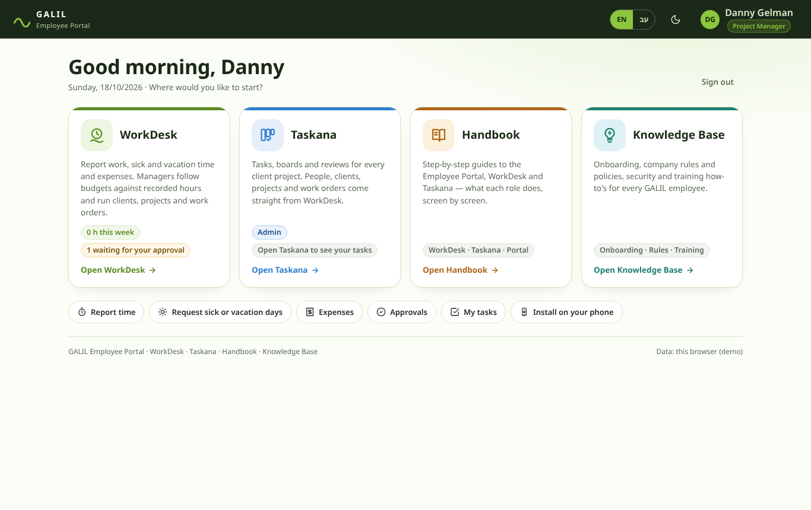
The four products
Who keeps what
The products share one set of records, and each record has one home:
| Record | Kept in | Seen in |
|---|---|---|
| People, roles, teams, portal access | WorkDesk | Taskana (People, assignees), the portal home page |
| Clients, projects, work orders | WorkDesk | Taskana (Clients & projects, every task) |
| Budgets, assignments, allowances | WorkDesk | Taskana (budget and hours-bank indicators) |
| Time, leave, expenses, approvals | WorkDesk | Taskana (hours reported on each task) |
| Tasks, comments, sub-tasks, checklists, saved views | Taskana | WorkDesk (the Time Log's Taskana task list and the Week Planner's suggestions) |
| Articles | Knowledge Base | — |
So a new client, project, work order or person is set up once, in WorkDesk, and appears in Taskana straight away; and time is reported once, in WorkDesk, and counts on the Taskana task it names.
English and Hebrew
The EN / עב switch — on the home page, in WorkDesk's top bar, in Taskana's sidebar, and at the top of this Handbook and the Knowledge Base — changes the language of the whole portal at once. In Hebrew every screen is laid out right to left; names, codes, dates and numbers keep their own direction. The choice is remembered on this device. Data people type — names, descriptions, comments — stays as typed.
Light and dark
The / button switches the theme. Like the language, it is one setting for the whole portal on this device.
Where the data is kept
The portal has no server. It is a set of web pages, and its data lives in two files — one for WorkDesk, one for Taskana — wherever config.js says:
- GitHub
- The files are kept on a branch of the company's repository. Each person connects once with a GitHub access token (the portal asks for it after sign-in).
- OneDrive
- The files are kept in a OneDrive folder, using the same Microsoft sign-in as the portal.
- Local
- The files are kept only in this browser — for trying the portal out, with the demonstration data.
Installing and configuring the portal is covered in the install guide.
Signing in and signing up
You sign in once, on the portal. WorkDesk, Taskana, the Handbook and the Knowledge Base all use that one session — none of them asks again. Only @galiltc.co.il addresses may sign in; external contractors do not sign themselves up — an administrator provisions them.
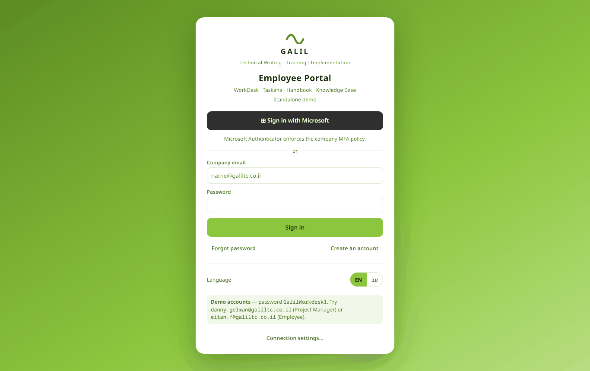
GalilWorkdesk1.Sign in with Microsoft
- Click Sign in with Microsoft.
- Approve the request in Microsoft Authenticator — this is where the company MFA policy is enforced.
- Choose your account. You land on the portal home page.
Without Microsoft Entra ID configured (the demonstration set-up), the account chooser lists the seeded accounts so you can try any role — see Reference.
Sign in with email and password
- Type your company email and password, then press Enter or click Sign in.
- If the address does not end in
@galiltc.co.il, the portal refuses it before checking the password.
Five consecutive failures lock the account for 15 minutes and count down the minutes remaining.
Forgotten password
Click Forgot password, enter your company address, and a single-use reset link valid for 30 minutes is sent.
Creating an account — the four-step wizard
Click Create an account on the sign-in card. The wizard will not let you past a step with an error on it.
- Identity — full name in English (Hebrew optional — it is shown when the portal is in Hebrew), company email, mobile number for MFA enrolment, and either a password or a linked Microsoft account. A password needs at least 12 characters with an upper-case letter, a lower-case letter and a digit.
- Role — Employee is the default. You may self-select Employee, Senior Employee or Team Lead; every role above Team Lead is marked needs approval. See Roles and permissions.
- Profile — job title and department are required. Team, direct manager, start date, contracted hours, employment type and a photo are optional but worth filling in.
- Confirm — check the summary, accept the internal usage policy, and click Submit for activation.
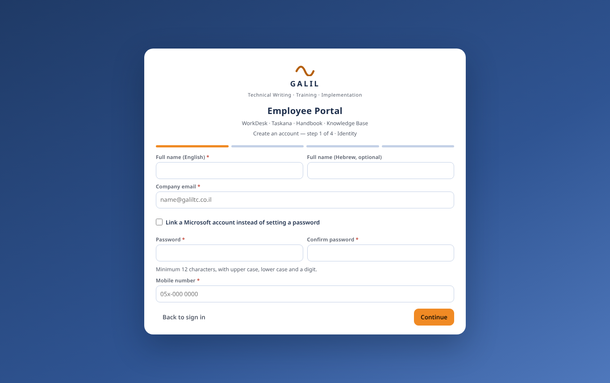
Waiting for activation
The account exists immediately but is held. Until an Operations Manager or the CEO activates it in WorkDesk (Management → Pending activation), signing in shows the holding screen and nothing else.
Sessions and signing out
A session lasts 12 hours of inactivity. Sign out — on the home page, in WorkDesk's profile, or in Taskana's sidebar — signs you out of the whole portal and returns you to the sign-in screen. Every sign-in and sign-out is written to WorkDesk's audit log.
A bookmark to Taskana, the Handbook or the Knowledge Base works too. If you are not signed in, the page says so and offers Go to the Employee Portal; after signing in, open it again from its tile.
Portal access
Each person has their own access across the portal: whether they may open WorkDesk, which role they have in Taskana, and whether they may read the Handbook and the Knowledge Base. It starts from their WorkDesk role and can be changed person by person.
The defaults
Until someone changes it, a person's access follows their WorkDesk role:
| WorkDesk role | WorkDesk | Taskana role | Handbook | Knowledge Base |
|---|---|---|---|---|
CEO OPS | Yes | Admin | Yes | Yes |
PM TL | Yes | Manager | Yes | Yes |
SEN EMP | Yes | Member | Yes | Yes |
FIN | Yes | Viewer | Yes | Yes |
EXT | Yes | External | Yes | No |
VIEW | Yes | Viewer | Yes | No |
What a person can do inside WorkDesk is still their WorkDesk role (Roles and permissions); what they can do inside Taskana is their Taskana role (Taskana roles, insights and data). The full set of portal and Taskana defaults, by role:
Changing a person's access
- Open WorkDesk → Management → People. The Portal access column shows each person's access as chips.
- Click beside the chips.
- Tick or clear WorkDesk, Handbook and Knowledge Base, and choose the Taskana role — or No access.
- Save. Use the role defaults returns the person to the table above.
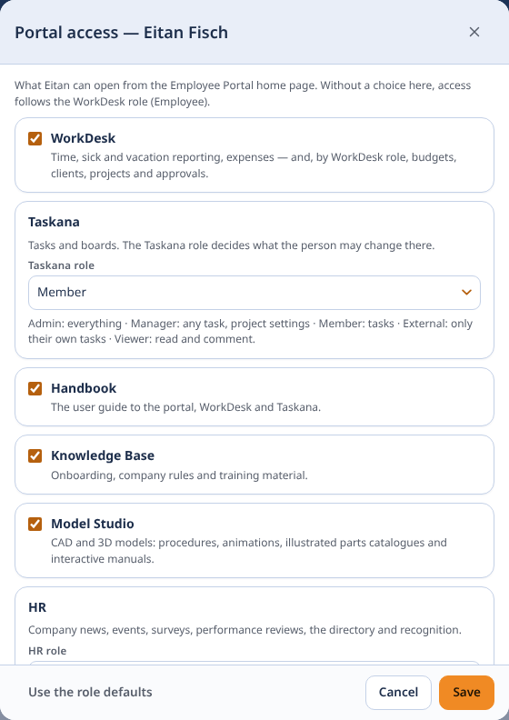
A person whose access was never changed follows their role: promoting an Employee to Team Lead makes them a Taskana Manager too. A person whose access was changed by hand keeps it until Use the role defaults is chosen.
Deactivating a person in WorkDesk closes the whole portal to them — Taskana, the Handbook and the Knowledge Base included.
Part B · WorkDesk
What WorkDesk is
WorkDesk is the part of the Employee Portal for time, money and the company's records: reported work, sick and vacation time, planned weeks, expenses, budgets, approvals — and the people, clients, projects and work orders every other part of the portal uses. One person's day goes in at the top; the company's utilisation, budget burn and payroll record come out at the bottom.
Open it from the WorkDesk tile on the portal home page. It has no server of its own: the company's records are kept in one data file — in the company's GitHub repository or on OneDrive, as set in config.js (see The Employee Portal) — and a copy is cached in your browser under galil-workdesk-v1. Your signed-in session is kept under galil-workdesk-session and is the same session Taskana, the Handbook and the Knowledge Base use.
When the portal runs on local storage only (no GitHub or OneDrive in config.js), clearing your browser data deletes the company's records. Whoever administers WorkDesk should download a backup regularly either way — see Backup and restore.
The three hour colours
Every hour you report is one of three kinds, and almost every rule in WorkDesk follows from which one you pick.
- Red · Company
- Internal time. Never billed to a client, never drawn from a project budget, and never blocked — Red hours register straight away whatever else is going on.
- Yellow · Client
- Billable time. Drawn from your allowance on the assignment and from the project or work-order budget. Yellow and Blue are the hour types the entitlement engine checks.
- Blue · Management
- New in V7.1. Time spent managing a client's projects and tasks. Blue hours work just like Yellow hours: they are attributed to a client and project, drawn from your personal allowance on the assignment and from the project or work-order budget, and go to approval under the same checks. Only Team Leads, Project Managers, Operations Managers and the CEO can report it; the option does not appear for anyone else.
Sick and Vacation are day types rather than hour types. You choose a start and an end date, and every working day (Sunday to Thursday) in between is recorded as one day. Unless you are the CEO, they are sent to your manager as a Leave request and count only once approved.
The words WorkDesk uses
| Term | What it means here |
|---|---|
| Client | The organisation the work is for. GALIL (internal) is a client too — it is where Red hours sit. |
| Project | A body of work for one client. Carries a status, an owner and optionally a budget. |
| Work order | A contracted slice of a project, coded WO-[client initials]-[6 digits]. A project marked WO tracked requires one on every entry. |
| Task | Kept in Taskana, not in WorkDesk. A time entry may name the Taskana task the hours went to; the hours then show on the task in Taskana. |
| Assignment | The link between a person and a project or work order. It carries that person's allowance in hours. No assignment means Yellow and Blue time goes to approval. |
| Allowance | Hours one person may report on one assignment. Blank means unlimited within the project budget; 0 means assigned but not yet funded. |
| Budget | Hours (or money, pages, words, custom units) agreed for a project or work order, across everyone. |
| Entitlement engine | The checks that decide, the moment you save, whether an entry registers or goes to approval. See Time Log. |
Dates, times and numbers
Dates display Israeli-style, 11/09/2026, and long dates as Friday, 11/09/2026. Times are 24-hour. Hours are derived from start and end and rounded to the nearest half hour — you never type a duration. Money shows with its currency symbol; ₪, $ and € are available.
How WorkDesk fits together
Every screen in WorkDesk works on the same small set of records. Once you know what they are and how they point at each other, every rule in the rest of this handbook — why an entry went to approval, where a budget's hours went, who a request is sent to — follows on its own.
The records
- Client
- A company GALIL works for, or GALIL (internal) for in-house work. Everything billable starts with a client.
- Project
- A piece of work for one client — a manual, a help system, a training package. A project has an owner (usually a Project Manager) and a status.
- Work order
- A contract line inside a project — the client's purchase order for one part of it, with its own code such as
WO-IAI-004182. A project can have none, one or many. - Budget
- The hours the client is paying for, attached to a work order, a project, or a whole client. Money budgets are turned into hours (amount ÷ hourly rate); Pages, Words and Custom budgets also count deliverables.
- Assignment
- The link between one person and a project or one of its work orders, carrying that person's allowance — the hours they may report there before their entries need approval.
- Taskana task
- A unit of work inside a project — and optionally inside one of its work orders. Tasks are created and worked in Taskana, on the projects and work orders WorkDesk defines.
- Time entry
- Hours one person reports for one day: Red, Yellow or Blue, against a client, project, work order and optionally a Taskana task. Sick and Vacation days are entries too.
- Approval request
- Anything that needs someone else's decision: a time entry that failed a check, leave, an expense, an allowance increase, a team loan or transfer, a new account.
- Team and direct manager
- Each person can belong to a team, which has a team lead, and has a direct manager. Between them they decide who receives the person's requests.
Setting up a piece of client work, in order
- Client — Management → Clients. Usually already there.
- Project — Management → Projects. Give it an owner; that Project Manager sees its budgets and decides its Budget exceeded requests.
- Work orders (if the client issues them) — Management → Work Orders. The first work order on a project marks it WO tracked: from then on every Yellow or Blue entry on it must name a work order. Entering budgeted hours when you create the work order also creates its budget.
- Budget — Management → Budgets, on the work order (most common), on the project, or on the client.
- Assignments — Management → Assignments & Allowances. Assign each person to the project or to a specific work order, with an allowance: a number of hours,
0(assigned but not yet funded) or blank (unlimited within the budget). - Tasks — in Taskana. The client, project, its work orders and its people appear there on their own; create the tasks on the project, pick a work order, an assignee and an estimate.
- People report time against it. Everything else — consumption, warnings, approvals, the Dashboard — follows from those entries.
How work orders work
- A work order always belongs to one project, and through it to one client. Its code is proposed from the client's initials.
- Creating the first work order on a project switches the project to WO tracked. On a tracked project, the Time Log form refuses Yellow or Blue time without a work order.
- A work order normally carries its own budget. Hours reported against the work order are deducted from that budget only — not from a sibling work order's.
- An assignment can name a work order or just the project. A work-order assignment is checked first; if there is none, a project-level assignment covers every work order in the project.
- Click a work-order code anywhere in a table to copy it.
How Taskana tasks work with assignments
Tasks and assignments are two different things, kept in two different places:
| Assignment (WorkDesk) | Task assignee (Taskana) | |
|---|---|---|
| Answers | May this person book hours on this project or work order, and how many? | Is this person working on this piece of work? |
| Set in | WorkDesk → Management → Assignments & Allowances | The task's Assignee in Taskana |
| Controls | Whether entries register or go to approval (Not assigned, Allowance exceeded) | Which tasks a person is offered in the Time Log's Taskana task list |
| Hours | Allowance — enforced by the entitlement engine, shown in Taskana as the person's hours bank | Estimate — compared with the hours reported on the task, not enforced |
When someone reports time with a Taskana task selected:
- They still need an assignment on the project or work order — a task on its own does not let anyone book hours. Without one the entry goes to approval as Not assigned; approving it creates the missing assignment.
- The task is information only: it never sends an entry to approval. The list offers the person's open tasks on the chosen project and work order.
- The hours count toward the task's Hours in WorkDesk in Taskana (Red, Yellow and Blue alike) and toward the person's allowance and the budget (Yellow and Blue only), exactly as an entry without a task would.
A team loan (see Teams) creates the assignment on approval — limited to the loan's dates — so the person can book hours on the project at once.
How hours are deducted from a budget
Only registered entries are ever deducted. An entry in approval is shown separately — amber, In approval — and is deducted only if and when it is approved.
- Which hours count. Yellow · Client and Blue · Management hours. Red · Company hours, Sick and Vacation days are never deducted from a budget or an allowance.
- Which budget. The most specific one: the entry's work-order budget if the work order has one, otherwise the project budget. A project budget counts every Yellow and Blue hour on the project, including hours booked to its work orders.
- Which allowance. The person's assignment on that work order, otherwise their project-level assignment on that project. Both the allowance and the budget are reduced by the same hours.
- The checks. Before registering, WorkDesk adds the new hours to what is already consumed. Past the allowance → Allowance exceeded, to the team lead. Past the budget → Budget exceeded, to the Project Manager who owns the budget.
- What the budget card shows. Budgeted, Consumed, In approval, Remaining, % used (amber at 90 %, red at 100 %) and a projected exhaustion date from the last 30 days' burn. Money budgets also show the value consumed (consumed hours × rate); Pages, Words and Custom budgets show deliverables produced against the target.
Work order WO-IAI-004182 has a Money budget of ₪180,000 at ₪300/h — 600 budgeted hours. Yossi is assigned to it with an allowance of 40 h and has 38 h registered. He reports a 4-hour Yellow entry: 38 + 4 = 42 > 40, so the entry is saved as Pending — Allowance exceeded and routed to his team lead. Nothing is deducted yet; the budget card shows 4 h In approval. When the team lead approves — optionally raising the allowance by the 2-hour overage — the entry registers, the budget's Consumed rises by 4 h and its Value consumed by ₪1,200.
Who receives what
| Request | Goes to |
|---|---|
| Time entry — most reasons | The person's team lead → their direct manager → a Project Manager → Operations → the CEO |
| Time entry — Budget exceeded | A Project Manager → Operations → the CEO |
| Sick or vacation leave | The person's direct manager first, then the chain above. The CEO's own entries register directly. |
| Team loan or transfer | Whoever the requester picks: the person's team lead, their direct manager, or the CEO |
| Expense above its type's ceiling | The same chain as a time entry — team lead first |
Nobody ever decides their own request, and Operations Managers and the CEO can act on any request. Team leads and direct managers are set in Management → Teams.
Everything else, in one line each
- Week Planner — planned hours per day against the same clients, projects and work orders; compared with registered actuals as Planned, Actual and Variance. Plans never consume a budget.
- Expenses — money or hours claimed against a client, project and work order, with evidence. A claim within its expense type's ceiling is approved on saving; above the ceiling it goes to approval. Approvers then mark it Paid or Rejected. Expenses do not reduce an hour budget.
- Dashboard — registered entries only, filtered by period, people, client, project and work order.
- Taskana — reads people, clients, projects, work orders, budgets, allowances and registered hours from WorkDesk, and shows them beside the tasks. See From WorkDesk to Taskana.
- Library — now in Taskana: rich research documents from SME interviews, site visits and walkthroughs. See The Library.
- Audit log — every change above, with who made it and when.
Roles and permissions
Nine WorkDesk roles. What you see in WorkDesk, what you may change, and whose records you may touch all follow from yours — including which tabs appear at all. Your role also sets your default portal access and Taskana role.
The nine roles
| Code | Role | What it carries |
|---|---|---|
EMP | Employee | Reports own time, plans own week, reports own expenses, reads and writes in the Taskana Library. |
SEN | Senior Employee | As Employee. The difference is one of seniority and of what the Week Planner and Dashboard show their managers. |
TL | Team Lead | As Senior Employee, plus approves time and expenses for their team, assigns their team to projects and may report Blue · Management hours. |
PM | Project Manager | As Team Lead, plus owns projects, work orders, budgets and assignments. |
OPS | Operations Manager | As Project Manager across all clients. Manages master lists, employees, roles and settings. |
FIN | Finance | Read-only across budgets, expenses, work orders and exports. Cannot approve time. |
CEO | CEO / Owner | Full access, including role assignment, deletion, audit log and company settings. |
EXT | External Contractor | Reports time only against explicitly assigned work orders. No budgets, Library or Dashboard; in Taskana, only the tasks they work on. |
VIEW | Viewer | Read-only dashboard access for a named stakeholder. No reporting rights. |
Scope letters
A permission is not simply on or off — it carries a scope that says whose records it reaches.
T · own team means: people sharing your team, people who report to you, and everyone in a team you lead. P · own projects means: projects you own, plus projects you are assigned to, and everyone who has reported time or holds an assignment on them.
The full permission matrix
This is the same matrix WorkDesk shows under → Roles & permissions. Tasks are not in it: what a person may do in Taskana is their Taskana role — see Portal access.
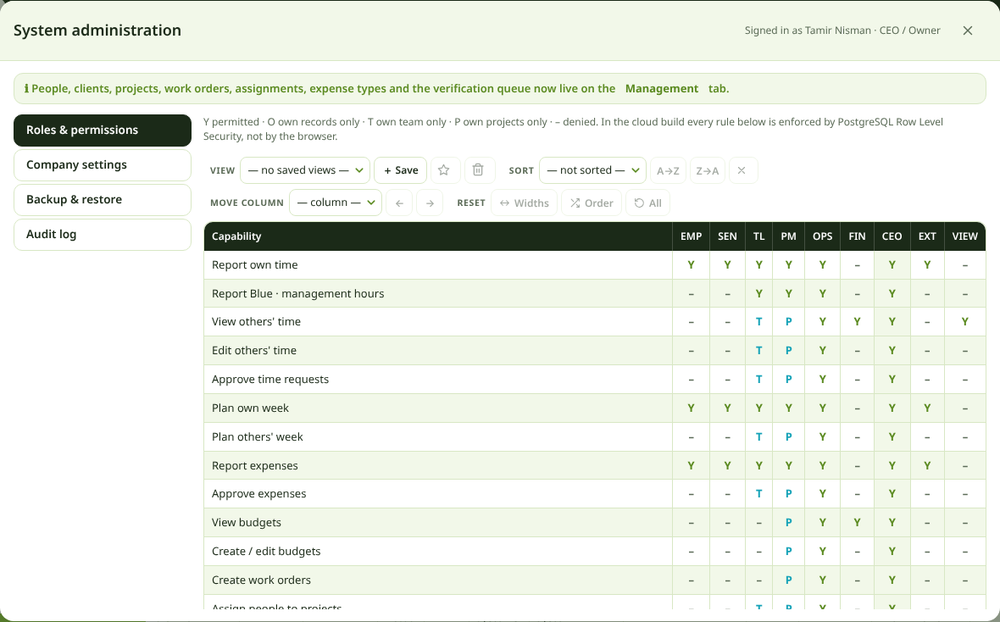
Which tabs each role sees
Tabs are hidden rather than disabled, so two people can be looking at very different applications.
| Role | Tabs shown |
|---|---|
EMP SEN | Time Log · Week Planner · Expenses · Dashboard |
TL | Time Log · Week Planner · Expenses · Management (People & Assignments only, own team) · Approvals · Dashboard |
PM OPS CEO | Time Log · Week Planner · Expenses · Management (full) · Approvals · Dashboard |
FIN | Time Log (read-only) · Management (Budgets, read-only) · Dashboard |
EXT | Time Log · Week Planner · Expenses |
VIEW | Time Log (read-only) · Dashboard |
Budget values visibility starts at Project Manager — a Team Lead's Management tab carries People and Assignments & allowances for their own team, not Budgets, so they approve their team's time without seeing what the project is worth.
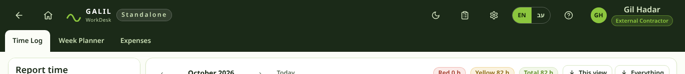
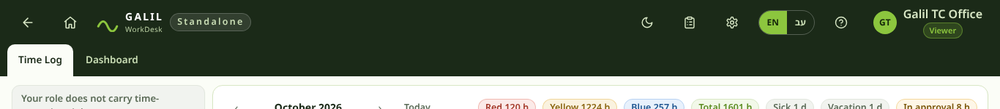
How a role is set or changed
- At sign-up you request a role. Anything above Team Lead raises a Role change request as well as the activation request.
- An Operations Manager or the CEO confirms the role at activation — they may change it before activating.
- Afterwards, the role is changed in Management → People using the dropdown in the Role column. Every change is written to the audit log as
Role change EMP → SEN for …. - Only
OPSandCEOmay manage employees and roles. Nobody else, at any level, can promote anyone.
Finding your way around
One dark top bar, one row of tabs, and a few icon buttons that open everything that is not a tab. The ← button steps back to the screen you were on; the button takes you to the portal home page.
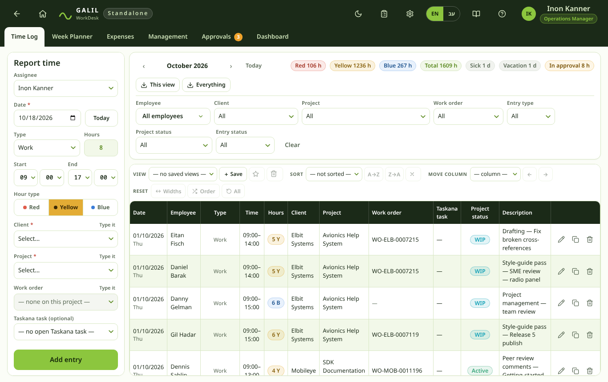
| Element | What it does |
|---|---|
| Back | Steps back through the tabs and Management sections you opened, one at a time. If a window is open (System administration, My profile, My assignments) it closes that first; with nothing left to step back through it returns to the portal home page. Alt+← (Alt+→ in Hebrew) and the mouse's back button do the same. |
| Back to the Employee Portal home page, where Taskana, the Handbook and the Knowledge Base are. | |
| GALIL · WorkDesk | Brand. The chip beside it shows where the data is kept and whether the last change has been saved there. |
| EN / עב | Switches the whole Employee Portal between English and Hebrew. Hebrew lays every screen out right to left. The choice is remembered on this device. |
| · | The book opens the Knowledge Base and the question mark opens this handbook, each in a new tab. |
| Offline chip | Appears when the browser goes offline. Changes are still written locally. |
| icon | My assignments and allowances — your funded work and the button that requests more hours. See My assignments and allowances. |
| icon | System administration — Roles & permissions, Company settings, Backup & restore and the Audit log. Shown to anyone who can back up data or read the audit log. Day-to-day record-keeping lives on the Management tab instead. |
| / icon | Switches between the light and dark theme. The choice is remembered on this device and applies everywhere in the portal, including the mobile shell below. |
| Your name chip | Opens your profile — contracted hours, manager, sign-in method, sessions, and Sign out. |
| Tab badges | Amber on Approvals counts outstanding requests waiting on you. |
| Toasts | Confirmations appear bottom-of-screen for a few seconds. Deletions carry an Undo button — use it before it fades. |
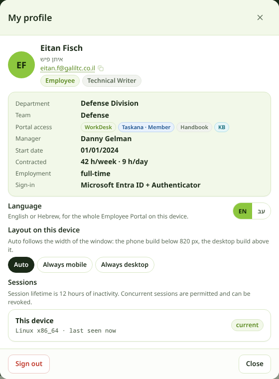
Working with tables
Every table in WorkDesk — the Time Log, Expenses, every Management section, the Roles matrix and Audit log, and My assignments — works the same way. Each one has a toolbar row directly above it.
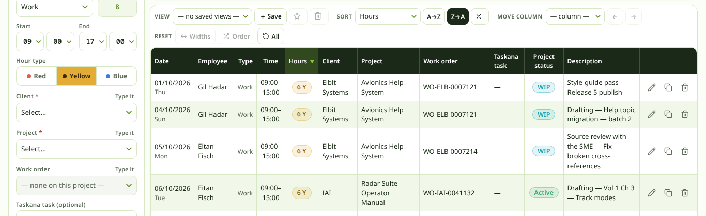
- Sort — click a column heading to sort A→Z (lowest first), again for Z→A (highest first), and a third time to clear it. A ▲ or ▼ beside the heading shows the sort in use. The Sort picker and its A→Z, Z→A and buttons in the toolbar do the same. Dates and numbers sort by value, and empty cells always go last.
- Move a column — drag its heading onto another column, or choose it in Move column and use ← and →.
- Resize a column — drag the right edge of its heading. Double-click that edge, or click Widths, to return to automatic widths that fit the content. The table always keeps the full width of its panel: narrowing one column hands the space to the table's main column (Description in the Time Log, Project in Budgets) rather than leaving a gap at the edge.
- Reset — Order restores the original column order; All clears the sort, order and widths together.
Saved views. Click ＋ Save to keep the current sort, column order and widths under a name; saving under an existing name replaces it. Pick a view from the View list to apply it. With a view chosen, makes it open automatically every time you open that table (it turns to , and the view is marked in the list); click again to stop. deletes the chosen view. Views belong to you and to that one table — each person keeps their own, and a view saved on the Time Log is not offered on Expenses.
galil-workdesk-table-views, separately from your WorkDesk data, so they are not part of a backup and do not follow you to another computer. A sort or column change you have not saved lasts until the page is reloaded; after that the table opens with your default view, or in its original layout.On a phone
Below 820 px WorkDesk swaps the whole shell for a dedicated mobile build, rather than just squeezing the desktop layout into a narrow column: one page at a time, a bottom navigation bar, native date and time pickers, and every tap target at least 44 px tall. It is the same data and the same rules underneath — every entry still runs through the entitlement engine — just laid out for a thumb instead of a mouse.
| Bottom tab | What it holds |
|---|---|
| Time | A running timer — Start the timer, then Stop and report when you're done, which opens the entry form pre-filled with the start and end times. Report without the timer skips straight to that form. Below it, ‹ › move between months; Mine shows your own entries and, for managers, Me and my team adds the people who report to you (directly or through your teams) — each card then names who reported it. Filter & sort narrows the list by person, type, status and project and sorts it newest first, oldest first or by most hours. Each entry can be edited, duplicated with Duplicate… (the same choices as on the desktop — see Duplicating an entry), or deleted, the same as on the desktop Time Log. |
| Plan | The Week Planner, one day at a time. |
| Expenses | + Report an expense opens a bottom sheet with the same fields — and the same evidence attachment control — as the desktop form. |
| More | Approvals (if you approve anything), My assignments and allowances, My profile, Library in Taskana, the portal home, Taskana, the Handbook and the Knowledge Base. |
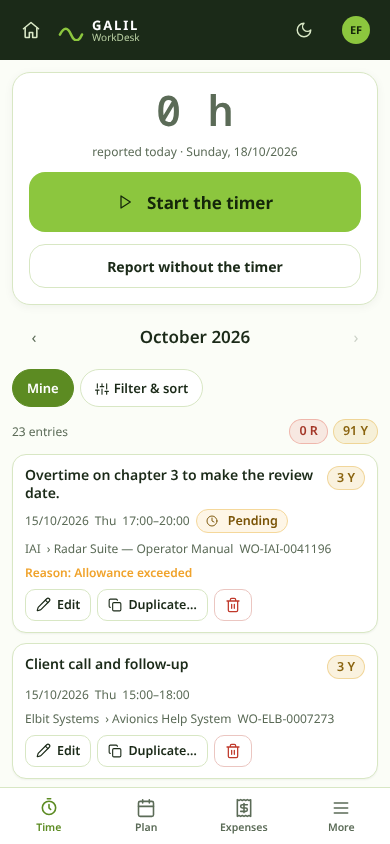
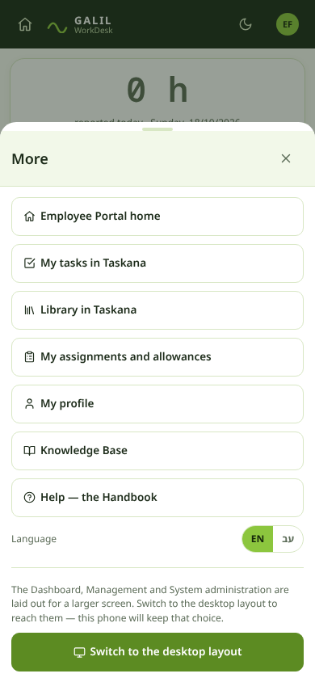
The Dashboard, Management and System administration are laid out for a larger screen and are not part of the mobile shell. My profile → Layout on this device lets you pin the layout to Always mobile or Always desktop instead of following the window width automatically.
Time Log
Where the day is reported. The report form runs down a narrow column on the left (on the right in Hebrew), the month of entries fills the rest of the screen beside it, and an engine in between decides whether each entry registers or goes to an approver.
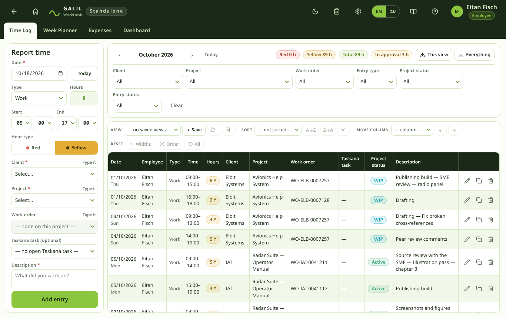
Reporting time
The form lists one field under another, in the order you fill them: Assignee (only for those who report for others), Date with Today, Type, Start and End, Hour type, Client, Project, Work order, Taskana task, Description and Notes, with a large Add entry button at the foot that stays in view while the column scrolls. On a desktop the Connected to GitHub sync pill sits under the form, the width of the column.
- Set the Date, or click Today. Future dates are refused — plan those in the Week Planner instead.
- Choose the Type: Work, Sick or Vacation. Sick and Vacation hide the time fields — see Sick and vacation days below.
- Set Start and End from the hour and minute dropdowns. Hours fills itself, rounded to the nearest half hour.
- Pick the Hour type — Red · Company, Yellow · Client, or — if you manage clients' projects and tasks — Blue · Management.
- For Yellow or Blue, choose Client, Project, and Work order if the project is work-order tracked. Optionally pick the Taskana task the time went to.
- Write a Description — it is required. Notes are optional.
- Click Add entry.
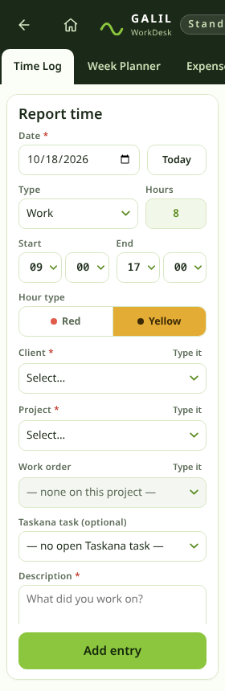
Each of Client, Project and Work order has a Type it toggle for something not yet on the master list. Typing a name is allowed, but the entry then goes to approval as an Unlisted item, and on approval the name becomes a real master-list record.
Sick and vacation days
- Set the Type to Sick or Vacation.
- Set From and To. Days counts the working days (Sunday to Thursday) in the range — Fridays and Saturdays are skipped. Future dates are allowed, so vacation can be requested ahead of time. One request covers up to 60 working days.
- For Sick, use Sick-leave confirmation to attach the confirmation from the clinic or doctor's office — a PDF or an image, up to 2 MB. You can replace or remove it before sending.
- Add a Description and click Send request.
The form shows who the request goes to: your direct manager, or — if you have none — the usual approval chain. Every day in the range is saved as Pending and stays out of the totals until your manager approves or declines the whole request at once. A decline cancels every day in it, and the reason is shown on each.
The CEO is the only role whose sick and vacation days register directly, without a request — for their own leave or anyone else's.
An attached confirmation appears as a button on each day in the Time Log and on the request card in Approvals; click it to open the document.
What the form refuses to save
- End time not later than start time.
- An empty description.
- Yellow or Blue time with no client, or no project. Switch to Red if it is internal.
- No work order on a project that is tracked by work order.
- An overlap with another entry you already reported that day — the message names the clashing times.
- An identical entry (same date, same start and end, same description).
- A future date (Work entries only — Sick and Vacation can be in the future).
- Sick or Vacation on a day already recorded as leave, or a range with no working days.
- A date inside a month that has been closed for payroll.
The entitlement engine
The moment you save, WorkDesk runs these checks in order. The first one that fails sets the entry to Pending, records the reason, and raises an approval request.
| # | Check | Outcome |
|---|---|---|
| 1 | Sick or Vacation | Pending — Leave request, routed to your direct manager. Registers directly only when the CEO records it. |
| 2 | Red · Company | Registers directly — never gated by an assignment, allowance or budget. Still counts toward the daily soft and hard limits below. Blue · Management is not exempt: it goes through checks 3–8 exactly like Yellow. |
| 3 | Unlisted client, project or work order | Pending — Unlisted item. |
| 4 | Assigned to that project or work order? | Pending — Not assigned. |
| 5 | Your allowance on that assignment | Pending — Allowance exceeded. |
| 6 | Project or work-order budget | Pending — Budget exceeded. Escalates to the project owner rather than your team lead. |
| 7 | Daily hard limit (default 12 h) | Pending — Daily limit exceeded. |
| 8 | Daily soft limit (default 9 h) | Registers, flagged amber. No approval needed. |
| 9 | Everything else | Registers. A Taskana task on the entry never changes the outcome. |
Consumption counts registered Yellow and Blue hours. Anything pending is never counted against an allowance or a budget, and never appears in an on-screen total — which is why pending hours are shown separately, in amber, as In approval.
Once you pick a project, a banner above the form tells you where you stand on that assignment: grey from 75 %, amber from 90 %, red at 100 % — "Further entries are accepted but routed to approval." You are never blocked; you are routed.
Entry statuses
| Status | Meaning |
|---|---|
| Registered | Counted. Included in totals, budgets and exports. |
| Pending | Waiting on an approver. Excluded from every total. The row is tinted and shows its reason. |
| Cancelled | Declined. Stays visible to you with the approver's reason, and never contributes hours. |
| Locked | The month was closed for payroll. Not editable; changing it needs a retroactive-edit request. |
Editing, deleting and correcting
- loads an entry back into the report form. Saving a pending entry re-runs the engine; saving a registered entry as an approver leaves it registered.
- deletes it and cancels any pending approval attached. The toast offers Undo.
- The Project status column shows the project's current status as set under Management → Projects. It is read-only here; the project status filter uses the same value.
- You may always edit your own entries. Editing someone else's needs
editOthersTime— Team Lead within their team, Project Manager within their projects, Operations Manager and CEO anywhere. - Opening Report time on this task in WorkDesk from a task in Taskana brings you here with the form already set to that task's client, project, work order and task.
- Click a Work order code anywhere in the table to copy it to the clipboard — useful when pasting it into an email or another system. A small confirmation toast names what was copied.
Duplicating an entry
The button next to a Work entry ( Duplicate… on the phone) opens the duplicate options:
- ← Previous day, Next day →, ← Previous week, Next week → — one copy, one day or seven days away.
- Custom — type a number of days and choose days back or days forward. On its own this makes one copy that many days away. Tick Copy to every working day in between to copy the entry onto every Sunday-to-Thursday in that range instead — for example 5 days back copies it onto each working day of the past five days. The line under the field shows the date, or how many days, before you click Duplicate.
- Specific date — pick any date up to today and click Duplicate.
Every copy takes the entry's client, project, work order, Taskana task, hour type, times and description, and goes through the entitlement engine as a fresh entry — it can land Pending even if the original was Registered, for example if the copy would now exceed an allowance. Dates that can't take a copy are skipped and named in the message: dates after today (plan those in the Week Planner), closed months, and days where the copy would overlap an entry already there or repeat it exactly.
Filtering and totals
The month navigator moves one month at a time; Today returns to the current one. Below it, filter by employee, client, project, work order, Taskana task, entry type, project status and entry status. Clear resets every filter at once. Totals always describe the filtered view. To sort the entries, rearrange or resize columns, or save the layout as a view, see Working with tables.
Exporting
This view exports the filtered month. Everything exports everything within your permission scope — which for an Employee, Senior Employee or External Contractor means their own records only. Pending entries are moved to a second worksheet so they can never be mistaken for reported time. See Excel exports.
Week Planner
Intent, not record. Planned entries never count as reported hours — they exist so you can see the week before it happens and compare it afterwards.
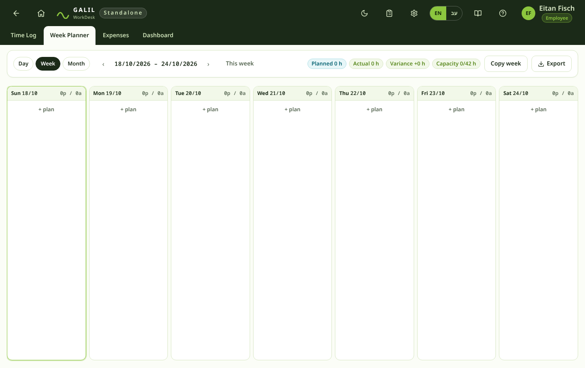
Planning a block
- Choose Day, Week or Month (a four-week grid), and move with ‹ › or This week.
- Click + plan in a day column.
- Set start and end — derived hours appear beneath — then hour type, client, project, work order, Taskana task and a description.
- Save. Drag the card to another day at any time.
Suggestions from your Taskana tasks
Your Taskana tasks that have a due date and are not yet Done appear as teal chips above the grid. Drag one onto a day and the planned entry is created pre-filled with that task's project, work order and title.
Capacity, variance and copying
- Planned, Actual and Variance chips compare the plan with registered time over the same span.
- Capacity compares the plan against contracted hours (weekly hours, scaled to the visible span). Planning past capacity turns the chip amber and adds a banner.
- Copy week duplicates every visible planned entry forward by seven days.
- Export produces a plan-against-actual worksheet with a variance column.
Planning for someone else
With planOthersWeek a Planning for selector appears. Team Leads see their team, Project Managers their projects' people, Operations Managers and the CEO everyone. Saving a change to someone else's plan notifies them.
Expenses
Money or hours, attached to a client and project, with evidence where the expense type demands it.
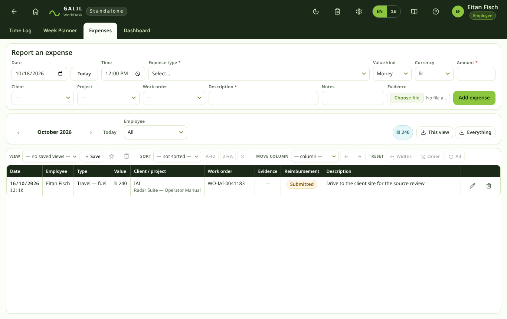
Recording an expense
- Set the Date and Time.
- Choose the Expense type. Types with a ceiling show it in the dropdown.
- Choose the Value kind: Money (with a currency) or Hours.
- Optionally attach it to a client, project and work order.
- Write a Description — required. Add notes if useful.
- Attach Evidence if the type requires it, then Add expense.
An expense at or under its type's auto-approval ceiling is approved on the spot. Above the ceiling it is saved as Submitted and routed to approval as above the ceiling for that type. Where the type requires evidence, the form will not submit without an attachment at all.
Reimbursement status
Four states — Submitted, Approved, Paid, Rejected. Anyone who may approve expenses changes it from the dropdown in the table — except on their own expenses, which someone else decides. Everyone else sees a coloured chip.
Reporting for someone else
With approveExpenses an Assignee selector appears on the form, scoped to the people you can see. The same people appear in the month filter.
Editing, deleting and exporting
loads the expense back into the form; deletes it, with Undo. You may act on your own expenses always, and on other people's if you may approve expenses. This view and Everything export with evidence filenames listed in their own column.
Replacing or removing an evidence attachment
Once a file is attached, it appears as a chip beside the Choose file button with its own two controls: a small replace icon that opens the file picker again and swaps the file in place, and an that removes it — the expense stays otherwise unchanged. The count in the table is itself a button: click it to reopen that expense's row in the form so you can replace or remove its attachment.
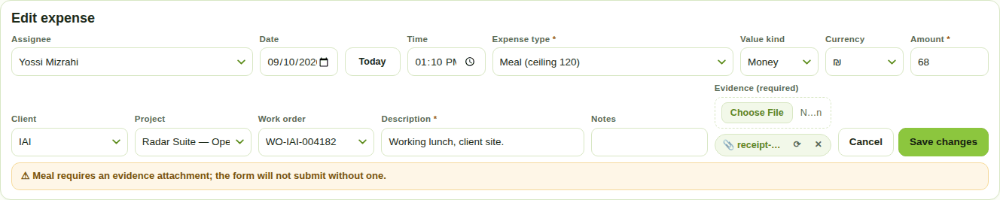
If the expense type demands evidence, removing the only attachment leaves the same warning the form shows when none was ever attached — Save changes is blocked until a new file is chosen.
Management
The day-to-day operational tab — budgets, work orders and the company's master records — behind one Management tab in the top bar. Up to V7, budgets and work orders lived on their own tab while people, assignments, clients, projects, expense types and the verification queue lived behind the button; V7.1 brings all of it together here. Its sub-tabs run, left to right: People · Teams · Clients · Projects · Work Orders · Budgets · Assignments & Allowances · Expense Types · Verification Queue, with Pending Activation last for Operations and the CEO. Which of them you see depends on your role. For how these records relate to each other, see How WorkDesk fits together. Everything kept here — people, clients, projects and work orders — also appears in Taskana, read-only, as soon as it is saved.
Project Managers see budgets on their own projects. Operations Managers, the CEO and Finance see all of them; Finance may look but not change. Everyone else has no Budgets section — the Management tab itself only appears once at least one section applies to you.
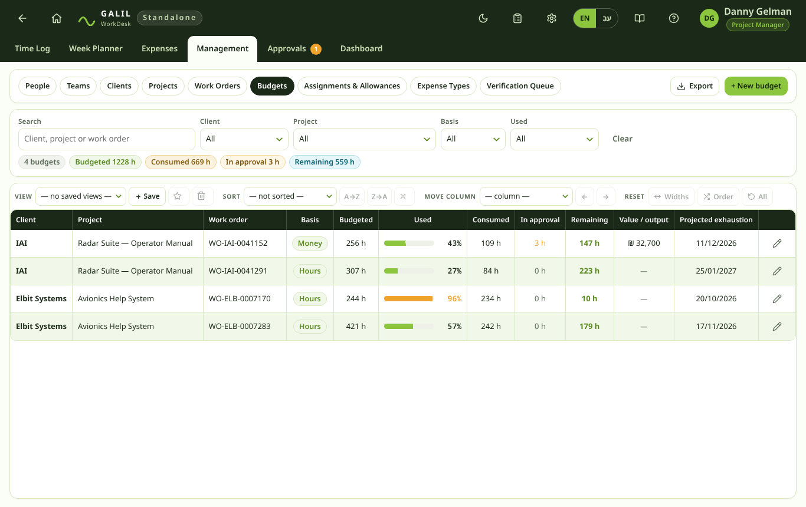
The budgets table
Every budget in your scope is one row: Client · Project · Work order · Basis · Budgeted · Used · Consumed · In approval · Remaining · Value / output · Projected exhaustion, then and History. A client-level budget reads All projects in the Project column. A row that is fully consumed is tinted red; hover the Basis chip of a money or unit budget to see its amount and rate, or its units.
The row above the table narrows it:
- Search — matches the client, project, work order and the budget's notes.
- Client and Project — only those that have a budget are offered; choosing a client narrows the projects.
- Basis — Hours, Money, Pages, Words or Custom.
- Used — Under 75%, 75–90%, 90–100% or Fully consumed.
- Clear resets them all.
At the end of the row, chips total the filtered view: the number of budgets, budgeted, consumed, in approval (when there is any) and remaining hours. The table sorts, moves and resizes like every other — see Working with tables.
Creating a budget
- Click + New budget.
- Pick the Client, then narrow to a Project and optionally a Work order. Leaving the project blank budgets all of that client's projects together.
- Choose a Pricing basis and fill the matching fields.
- Save budget.
| Basis | What you enter |
|---|---|
| Money | Currency, amount and hourly rate. Budgeted hours are derived — amount ÷ rate — and the field goes read-only. |
| Hours | Budgeted hours directly. |
| Pages / Words / Custom | Budgeted units, a unit name, how many are produced so far, and budgeted hours alongside. |
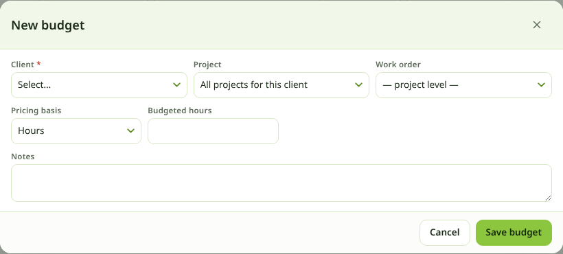
Reading a budget row
| Figure | How it is calculated |
|---|---|
| Used | Consumed as a share of budgeted, as a bar and a percentage — amber from 90 %, red from 100 %. |
| Consumed | Registered Yellow and Blue hours in the budget's scope. A work-order budget counts only that work order; a project budget counts the project. |
| In approval | Pending Yellow and Blue hours in the same scope. Not yet consumed — but coming. |
| Remaining | Budgeted minus consumed. Turns red when negative. |
| Value consumed | Money basis only — consumed hours × rate. |
| Deliverables | Unit bases only — produced against budgeted units. |
| Projected exhaustion | Extrapolated from the last 30 days' burn. Reads now if already exhausted, — if nothing has been burned. |
At 90 % the row's percentage turns amber, visible to the project owner and Finance. At 100 % the row turns red and every further Yellow or Blue entry on that project routes to approval.
Change history
Editing a budget's basis, amount, rate, hours, units or currency appends to its history. The History button opens a table of when, who, which field, and the before-and-after values.
Work orders
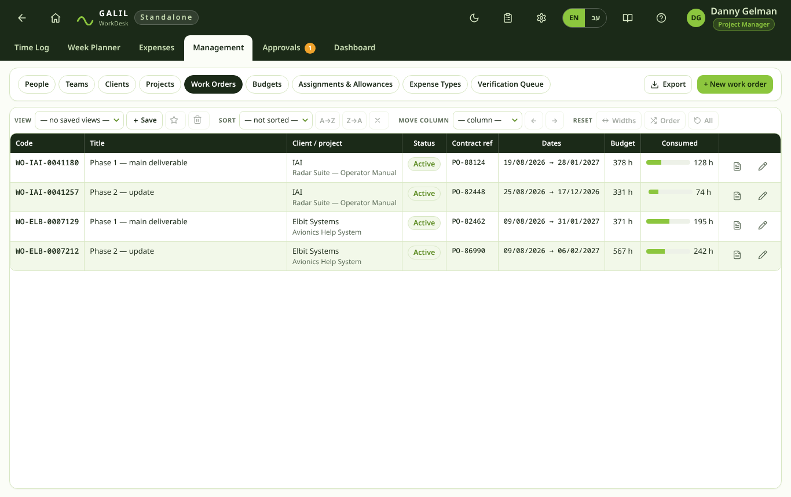
- Switch to Work orders and click + New work order.
- Pick the project — WorkDesk proposes a code in the form
WO-[client initials]-[6 digits]. You may override the digits, but the shape is enforced. - Give it a title, a status (Active, On hold, Closed), a contract reference and dates. Title in Hebrew is optional: it is the title the Hebrew document shows; left empty, the Hebrew document shows the English title.
- Enter Budgeted hours for this work order and a budget record is created or updated for you.
- Under What the work order includes, describe the Scope of work and list the Deliverables, one per line.
- Under Client points of contact, add the people on the client's side — name, role on the project, email and phone. The client's main contact is filled in for you.
- Under Designated from GALIL, pick the Project lead (the project owner by default) and the Team members. Left empty, the team is taken from the people assigned to the work order.
- Under Signatures, name the client's signatory and choose who signs for GALIL (the CEO by default). Notes are printed on the document, above the standard terms of engagement.
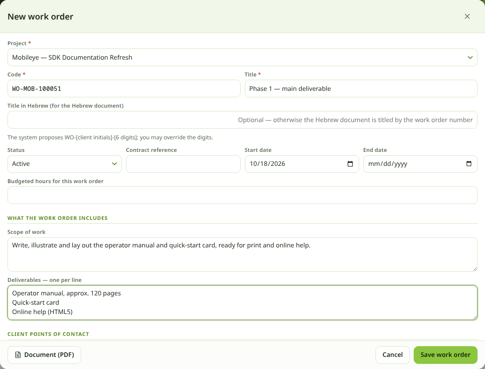
The work order document
Every work order produces an official GALIL document as a PDF: the button on its row in the register, or Document (PDF) at the foot of the editor. The document carries the GALIL letterhead — the [G] mark beside the company name and its tagline — and a footer with the company address. It is headed Work order <code>; the order's own title is listed in the order details (in the Hebrew document, its Hebrew title when there is one). It then sets out the scope of work, deliverables, budget, the client's points of contact, GALIL's project team and notes.
Then come the Terms of engagement, numbered clauses that apply to every work order: schedule, GALIL's responsibilities, the client's responsibilities, delays, changes, acceptance, payment, confidentiality, ownership, liability, termination and general. The schedule clause carries the order's own start and end dates. The two signature blocks — one for the client and one for GALIL — always sit together at the foot of the last page, under a line confirming what both parties agree to; if they don't fit there, they move to a new page whole rather than splitting.
- Open the document. A preview appears in the window.
- Choose English or עברית at the top. The Hebrew document is laid out right to left, with people's Hebrew names, the Hebrew title and the terms in Hebrew; brackets, codes and numbers inside Hebrew text read the right way round. It opens first when the portal is in Hebrew.
- Download PDF saves it as
GALIL-<code>.pdf(GALIL-<code>-HE.pdfin Hebrew). - Email sends it to the addresses in Send to — the client's contacts, unless you change them. On a phone, and in Edge and Safari, the PDF goes attached; elsewhere it downloads and your mail app opens with the message written, ready for you to attach the file.
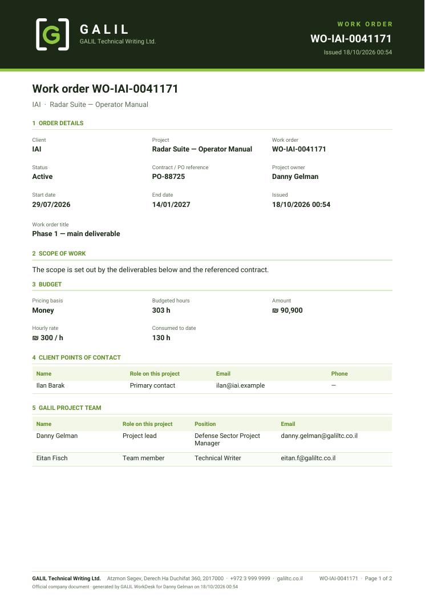
Creating the first work order on a project marks that project WO tracked. From then on, every Yellow or Blue entry on it must name a work order.
People
Everyone, with email, role, team, manager and status. Operations Managers and the CEO change roles from the dropdown here and can Deactivate or Reactivate an account — except their own, which another administrator changes. Everyone else sees the same list read-only. Click an email address to copy it — every email address in WorkDesk works the same way. The Used by column counts the records each person is attached to. The Portal access column shows which parts of the portal the person can open and their Taskana role; Operations Managers and the CEO change it with — see Portal access.
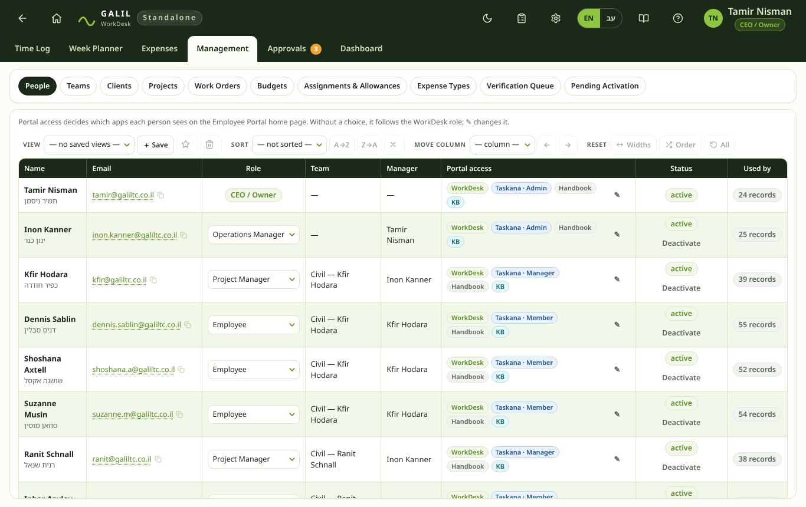
Teams
The second sub-tab, after People. Team Leads, Project Managers, Operations Managers and the CEO set up teams here, place people in them, choose each member's direct manager and ask other teams for people. Every team in the company is shown as a card; your own teams come first.
The team card
Each card shows the team's colour and initials, its name, department and short code, its description, the team lead, location and contact, its main clients, and its members as avatars — temporary members (on loan from another team) have a dashed outline. On your own teams the card offers Manage and Edit details; on other teams it offers Request a member.
Creating or customising a team
- Click + New team (or Edit details on a card).
- Fill the three required fields: Name, Description and Department. The department list covers the usual departments of a technical-writing company — Technical Writing, Documentation, Training & Instructional Design, e-Learning Development, Localization & Translation, Editing & Proofreading, Illustration & Graphics, Information Architecture, Content Strategy, API & Developer Documentation, Quality Assurance, Project Management, Operations, Finance & Administration, Sales & Business Development, IT & Tools — or choose Other — type it and type your own.
- Optionally set a short code, a colour, a team email or channel, a location and the team's main clients. Main clients are offered first when the team asks for a person on loan.
- Operations Managers and the CEO also choose the Team lead; anyone else who creates a team becomes its lead.
- Click Create team or Save team.
Placing available people
The Available people panel lists everyone who has no team, no direct manager, or both. Choose one of your teams in Place in team…: the person joins it and its team lead becomes their direct manager. Usually a person is placed with a manager who leads a team, or in a team whose lead becomes their manager.
Manage on one of your cards opens the team: change each member's direct manager from the dropdown, take someone out with Remove (their direct manager is kept), or add a person with Add a person and Their direct manager. Delete team works once the team has no members.
Requesting a person from another team
Use Request a member on another team's card, Request a team member at the top, or Request someone from another team inside Manage. Choose what you are asking for:
| Temporary — for a client's project | Permanent transfer | |
|---|---|---|
| You fill in | The person, your team, the client, project, from and to dates, an optional hour allowance and a reason | The person, your team and a reason |
| Sent to | The person you choose in Send the request to: the person's team lead, their direct manager, or the CEO | |
| Appears as | A Team loan in Approvals | A Team transfer in Approvals |
| On approval | The person keeps their own team and manager, shows in your team as a temporary member for those dates, gets an assignment on the project (with the allowance you set, valid only between the dates) | The person moves to your team and your team lead becomes their direct manager |
The Team requests list at the bottom of the sub-tab shows the requests you sent, the ones you were asked to decide, and those involving your teams, with their status.
Who can do what
Team Leads and Project Managers manage only the teams they lead. They can place people who have no team or who are in another of their own teams — but not themselves, an Operations Manager or the CEO; anyone else has to be requested. Nobody changes their own direct manager. Operations Managers and the CEO manage every team and choose each team's lead.
The direct manager receives the person's sick and vacation requests. The team lead is first in line for the person's other approval requests, with the direct manager next. See How WorkDesk fits together for the full routing.
Pending activation
New sign-ups wait here. For each one:
- Confirm or change the role they requested.
- Set their team.
- Give them an initial project and an allowance in hours.
- Activate — or Reject, which closes the account.
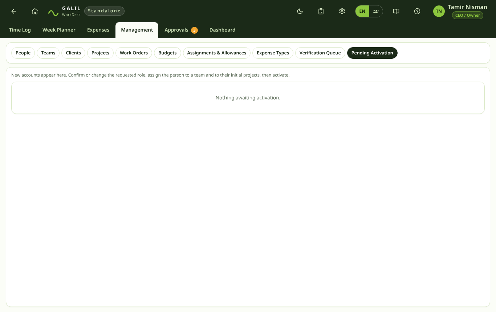
Assignments & allowances
The control that decides whose Yellow and Blue time registers quietly and whose goes to approval.
| Allowance value | Effect |
|---|---|
Blank (∞) | Unlimited within the project budget. |
| 0 | Assigned but not yet funded — every entry goes to approval. |
| A number | Hours that person may report on that assignment before approval is required. |
Allowance is set per assignment, not per person: the same writer can hold 40 hours on one work order and 200 on another. Edit a number in place and it saves when you leave the field. Your own allowance is shown read-only here — raise it through My assignments → Request hours, like anyone else; removes the assignment. Blue hours draw on the allowance and the budget just like Yellow hours.
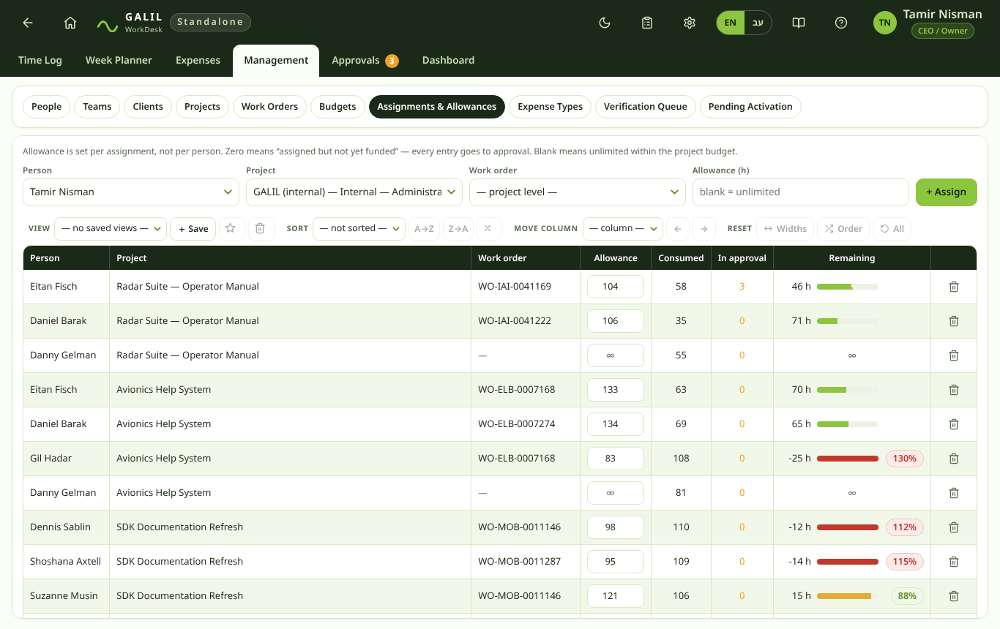
Clients, Projects and Expense types
Each is a table with an add band above it. Rename with , remove with .
The Used by column counts the saved records that reference an item. If it is above zero, removal is refused. Deactivate or close it instead.
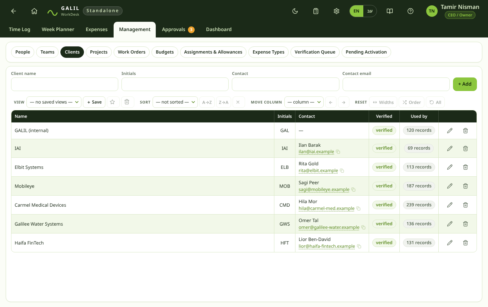
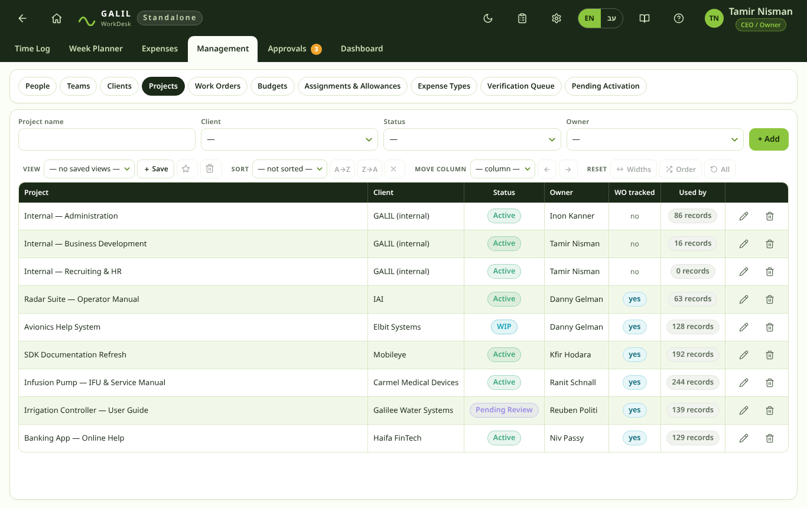
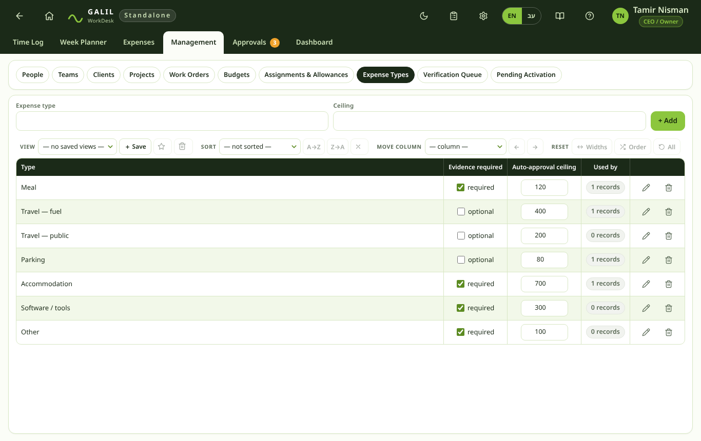
Verification queue
Clients and projects created by approving an unlisted item wait here until a manager clicks Confirm. It is the tidy-up step after a busy week of typed-in names.
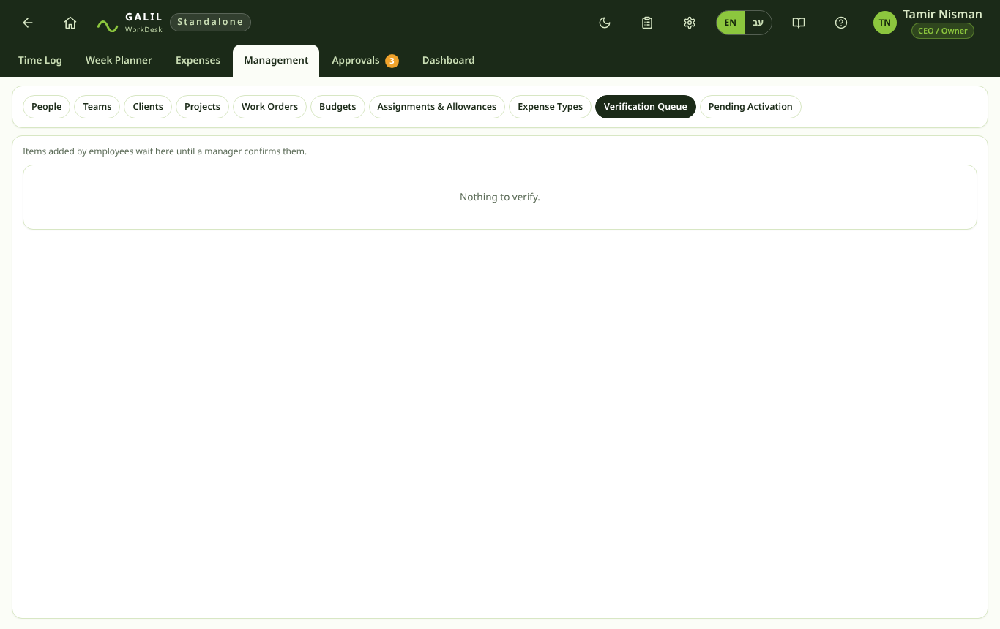
Approvals
One queue for everything the engine could not decide by itself: time entries, allowance increases, unlisted list items, over-ceiling expenses, new accounts, role changes and retroactive edits.
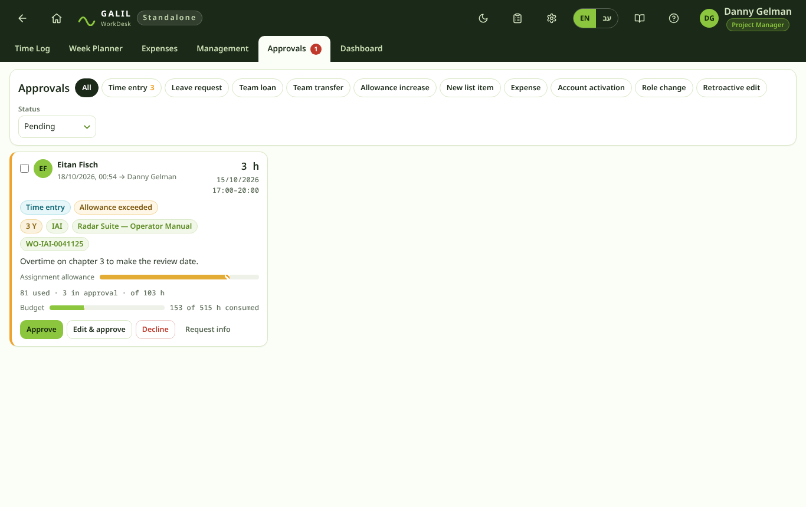
What lands in your queue
- Requests routed to you directly.
- Requests from anyone in your approval scope — your team for a Team Lead, your projects for a Project Manager.
OPSandCEOsee everything: higher in the chain may always act.- Never your own. A request you raised is invisible to you as an approver, whatever your role.
How a request is routed
For most reasons, WorkDesk tries in order: your team's lead → your direct manager → a Project Manager → the Operations Manager → the CEO, skipping anyone who is inactive, cannot approve time, or is the requester.
For a Leave request (Sick or Vacation) it tries your direct manager first, then falls back to the order above.
A Team loan or Team transfer goes to whoever the requester chose — the person's team lead, their direct manager or the CEO. The card shows the person, the two teams and, for a loan, the client, project, dates and hour allowance. Approving a loan creates the person's assignment; approving a transfer moves them and makes the new team's lead their direct manager. See Teams.
For Budget exceeded it skips the team entirely and goes Project Manager → Operations Manager → CEO, because the decision belongs to whoever owns the budget.
The four actions
| Action | What happens |
|---|---|
| Approve | The entry registers, or the expense is approved, or the account is activated. The requester is notified. |
| Edit & approve | Opens the entry in a full Time Log form. Correct it, then Save & approve. Both the original submission and the corrected version are kept in the audit log. You may also set the person's allowance on that assignment while you are there. |
| Decline | A written reason is mandatory. The entry becomes Cancelled, stays visible to the requester with your reason, and never contributes hours. |
| Request info | Sends a question. The request stays Pending and the exchange appears as a thread on the card. |
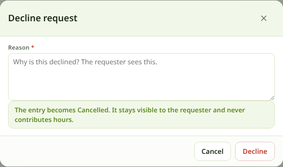
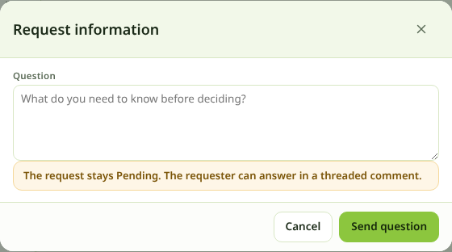
What approval quietly fixes
- Unlisted item — the typed client or project becomes a real, verified master-list record, and the entry is re-pointed at it.
- Not assigned — an assignment is created for that person on that project or work order, so the next entry does not re-trigger.
- Allowance exceeded — you are asked to choose. Approve only registers this entry and leaves the allowance alone; Approve and raise allowance raises it by exactly the overage, so the next entry does not re-trigger either.
- Account activation — confirm the role in the dropdown on the card before approving.
Bulk approval
Tick the checkbox on several tiles and a Bulk approve button appears. Requests whose reason is Budget exceeded cannot be ticked and cannot be bulk-approved — they must be handled one at a time.
Reviewing decisions
Switch the Status selector to Approved or Declined to see history. You will see decisions you made, decisions routed to you, and — as OPS or CEO — everything. Each shows who decided, when, and any note.
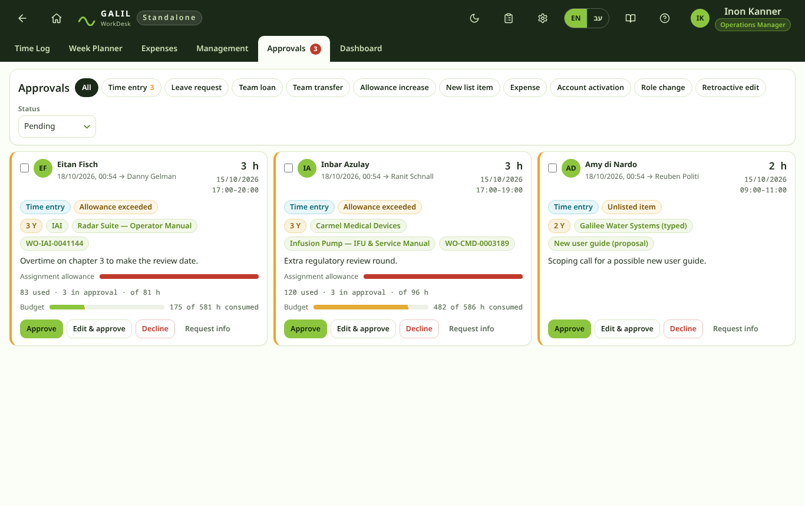
Dashboard
Registered time only, over a period you choose — laid out the way you want. Each person keeps their own dashboards, each a set of widgets you pick from a catalogue or build yourself, with a manager cockpit for anyone who has people or budgets to watch.
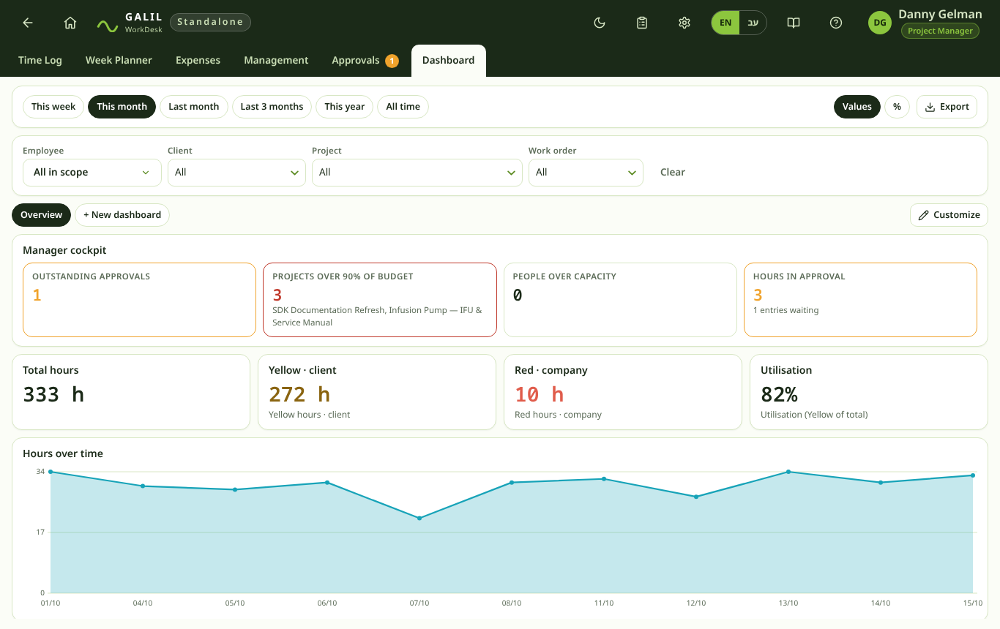
Scope
With dashboardCompany you see everyone in your scope and get an Employee multi-select. Without it — Employee, Senior Employee — the Dashboard shows your own figures only. External contractors have no Dashboard at all.
The manager cockpit
Shown to Team Leads, Project Managers, Operations Managers, Finance and the CEO. Four tiles that turn colour when they need attention:
- Outstanding approvals — requests waiting on you.
- Projects over 90 % of budget — named in the subtitle.
- People over capacity — planned beyond contracted hours this week.
- Hours in approval — pending hours in your scope that are not counted yet.
The standard dashboard
Everyone starts with one dashboard, Overview: the manager cockpit (managers only), Total hours, Yellow · client, Red · company and Utilisation (Yellow as a share of total), hours over time, hours by client, the hour split — Red/Yellow(/Blue) and planned against actual with its variance — Sick days, Vacation days, Expenses and Entries reported.
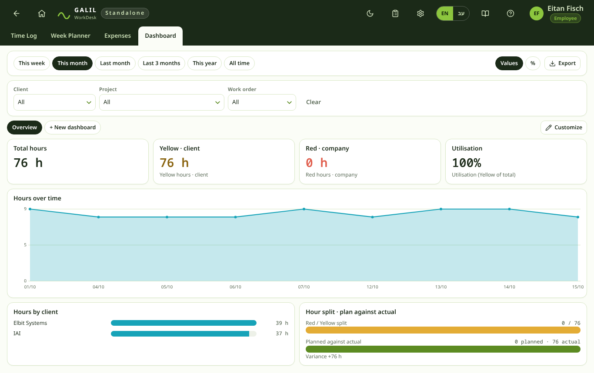
Customizing a dashboard
The pills under the filters are your dashboards; click one to open it, or + New dashboard to start another — give it a name (Billing, My team, Client X) and it opens empty, ready for widgets. Dashboards are saved with your WorkDesk data, so they follow you to any device, and nobody else sees them.
- Click Customize. Each widget gets its own buttons, and the dashboard tools appear: + Add widget, Rename, Duplicate, Reset (back to the standard set), Delete (you always keep at least one) and Done.
- + Add widget opens the catalogue. Click a ready-made widget to add it at once, or Build your own… to set one up.
- Rearrange: drag a widget onto another's place, or use ← and → on it. opens its settings; removes it.
- Click Done.
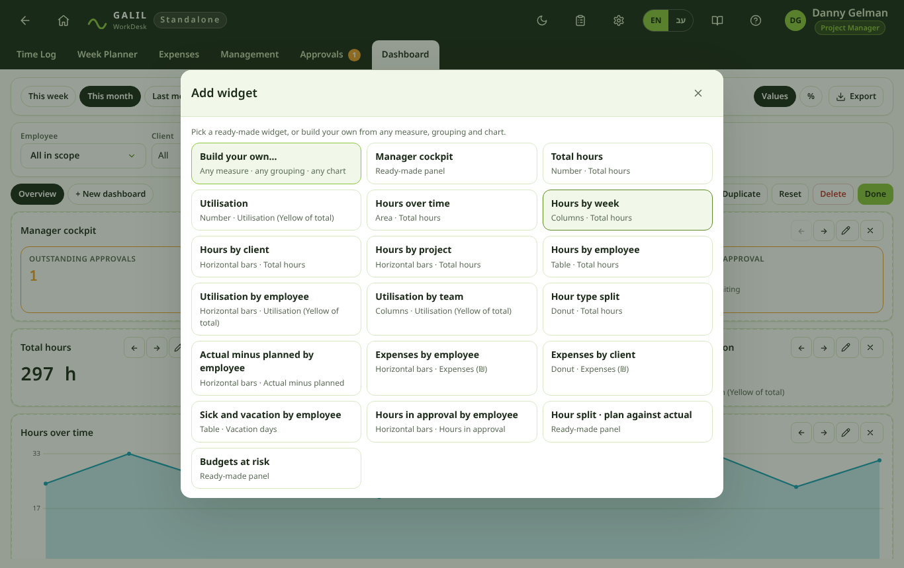
| Widget setting | Choices |
|---|---|
| What to measure | Total hours · Red · Yellow · Blue hours · Utilisation · Entries reported · People reporting · Planned hours · Actual minus planned · Hours in approval · Sick days · Vacation days · Expenses (₪). |
| Group by | No grouping (one number) · Day · Week · Month · Day of the week · Employee · Team · Client · Project · Work order · Hour type · Entry type. |
| Show as | Number (with no grouping) · Horizontal bars · Columns · Line · Area · Donut · Table. |
| Show the top | 5, 10, 20 or all groups — for groupings other than time and hour type. |
| Only for | One employee, client or project — narrows this widget further than the dashboard's filters. |
| Width and Colour | ¼, ⅓, ½, ⅔ or the full width; the colour of bars, columns, lines and areas. |
Ready-made panels: Manager cockpit and Budgets at risk (managers), and Hour split · plan against actual. Every widget follows the dashboard's period, the % toggle and the filters above it.
Filters and export
Filter by employee, client, project and work order; Clear resets them. Export writes the underlying entries — not the chart — so the numbers can be checked.
My assignments and allowances
The button in the top bar. Where your funded work lives, and where you ask for more hours before you run out. Taskana shows the same figures as My hours banks on My work.
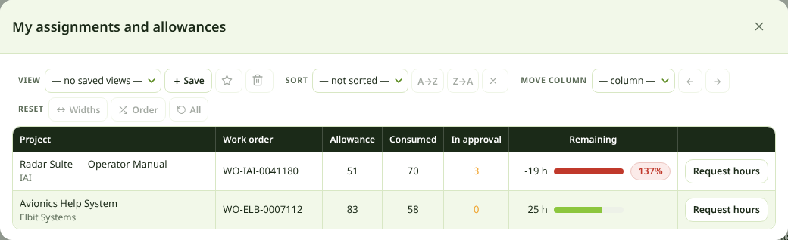
Requesting additional hours
- Click Request hours on the assignment that needs them.
- Read the four figures — allowance, consumed, remaining, in approval — then enter the additional hours.
- Write a justification. Both fields are required.
- Submit request.
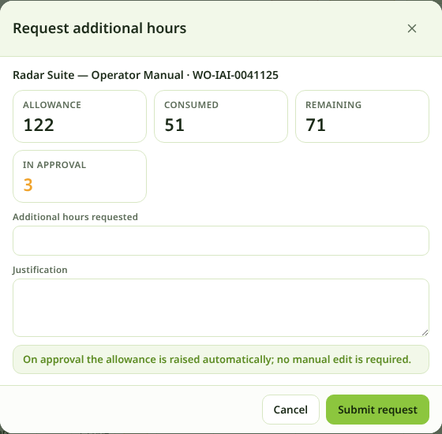
The request appears in the approval queue as an Allowance increase, showing the hours asked for and your justification. On approval, the allowance is raised automatically.
The button still opens, but shows "You hold no project or work-order assignments yet" in place of the table. Ask an Operations Manager to assign you to a project — until then, every Yellow or Blue hour you report will route to approval as Not assigned.
System administration
One modal behind the button, with sections down its left side. Up to V7 this was called Lists & data administration and held everything from people to the audit log; in V7.1 the day-to-day record-keeping (people, activation, assignments, clients, projects, expense types, verification) moved to the Management tab, so this modal now holds only the settings a company runs once and rarely touches.
Roles & permissions
A read-only view of the same permission matrix printed in Roles and permissions, for reference while you are signed in as a particular role.
Company settings
OPS and CEO only.
- Daily soft limit (default 9 h) — entries above it register with an amber flag.
- Daily hard limit (default 12 h) — entries above it route to approval.
- Default weekly hours (default 42 h).
Month close and payroll lock
- Pick the month and click Close month.
- If the month still holds pending requests, WorkDesk refuses and says how many. Clear the queue first.
- On close, every registered entry in that month becomes Locked and can no longer be edited.
- A closed month appears as a chip with a reopen link, which unlocks its entries again.
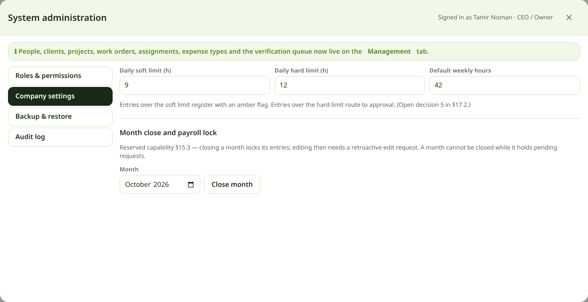
Backup & restore
See Backup and restore for the file format and the three restore operations — it has its own chapter because it matters that much.
Audit log
Append-only. Every sign-in, sign-out, role change, portal-access change, approval decision, budget edit, allowance change and deletion is recorded with actor, timestamp, entity and device. Visible to OPS, FIN and CEO; the most recent 400 entries are shown, 4,000 retained.
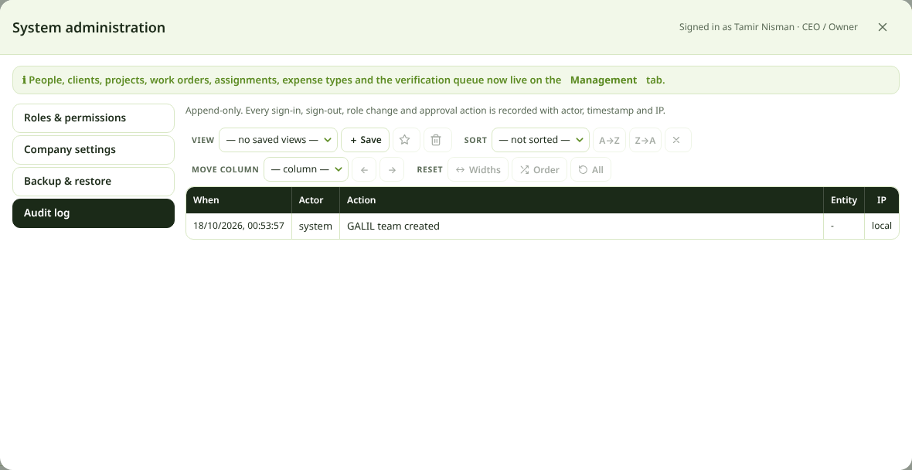
Backup and restore
With local storage this is the only safety net there is; with GitHub or OneDrive it is still the way to keep a dated copy. OPS and CEO only. Taskana's tasks have their own backup — see Taskana roles, insights and data.
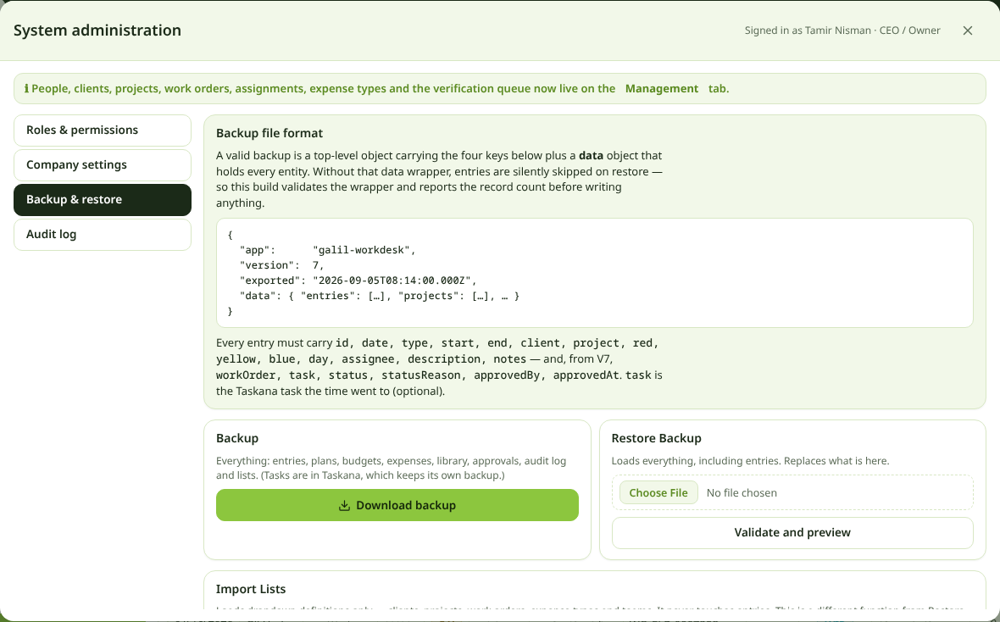
The file format
A valid backup is a JSON object with four top-level keys, one of which wraps everything else:
| Key | Value |
|---|---|
app | Must be exactly "galil-workdesk". Anything else is refused. |
version | 7 for this build. |
exported | ISO timestamp. |
data | The object holding every entity: entries, projects, work orders, budgets, assignments, expenses, library, approvals, audit and the lists. Tasks are not in it — they are in Taskana's file. |
The three operations
| Operation | What it does |
|---|---|
| Download backup | Writes everything to galil-workdesk-backup-YYYY-MM-DD.json. |
| Restore everything | Loads everything, including entries, and replaces what is there. Choose the file, click Validate and preview, check the record counts, then Restore everything. |
| Import lists only | A different function. Loads dropdown definitions only — clients, projects, work orders, expense types and teams — and never touches entries. Existing items are matched by id, name or code and skipped. |
Browser storage is finite. If it fills, WorkDesk warns that the last change was not saved and asks you to download a backup and remove attachments. Take that message seriously — it means a write failed.
Excel exports
Five modules export. Every file is a real .xlsx with a branded title band, a line recording the filter and who exported it, a frozen and filtered header row, true Excel dates, and a totals row. With the portal in Hebrew, the headings are in Hebrew and the sheet runs right to left.
| From | File | Contains |
|---|---|---|
| Time Log | galil-time-YYYY-MM.xlsxgalil-time-all.xlsx | Entries with Red, Yellow and Days totalled. Pending entries go to a separate Pending worksheet. |
| Week Planner | galil-plan.xlsx | Planned against actual per block, with a variance column. |
| Expenses | galil-expenses-YYYY-MM.xlsxgalil-expenses-all.xlsx | Amounts and hours totalled, reimbursement status, evidence filenames. |
| Budgets | galil-budgets-all.xlsx | Budgeted, consumed, in approval, remaining, % used, projected exhaustion, units and produced. |
| Dashboard | galil-dashboard-all.xlsx | The entries behind the charts for the selected range. |
Scope
Export scope follows the permission matrix, not the screen. Everything gives an Employee, Senior Employee or External Contractor their own records; a Team Lead their team; a Project Manager their projects; and Operations, Finance, the CEO and Viewers everything.
Date columns carry real Excel dates formatted Sunday, 26/07/2026, so they sort and filter properly. Red and Yellow columns are accent-coloured to match the application.
Part C · Taskana
What Taskana is
Taskana is where the work itself is planned and followed: every writing, editing, review, illustration and translation task on every client project, on a board and in lists, with comments, questions and sub-tasks. It holds tasks only — the people, clients, projects and work orders it works on come from WorkDesk.
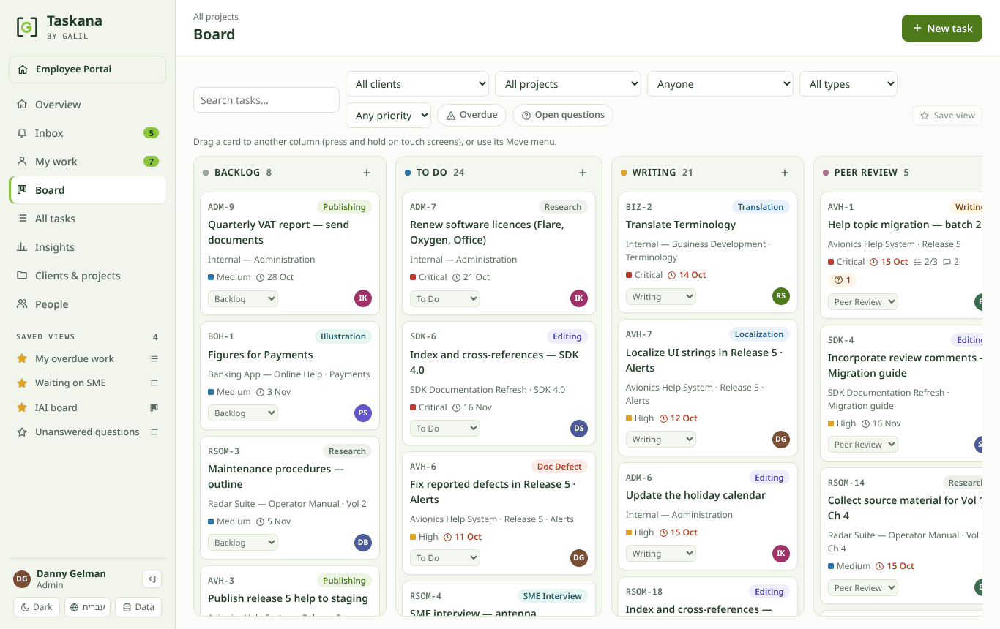
Opening it
Click the Taskana tile on the portal home page. You are already signed in — Taskana uses the portal session — and your Taskana role comes from your portal access. Employee Portal at the top of the sidebar takes you back to the home page.
The pages
| Page | What it shows |
|---|---|
| Overview | Your open tasks, overdue and in-review counts, open questions, active projects and recent activity. |
| Inbox | Mentions, assignments and replies to your tasks. The count beside it is unread items. |
| My work | Tasks assigned to you and tasks you reported for others — and My hours banks, your allowance on each project from WorkDesk. |
| Board | Every task in its workflow column, filtered by client, project, assignee, type, priority, status or text. |
| All tasks | The same tasks as a list, with bulk actions. |
| Insights | Delivery metrics — see Taskana roles, insights and data. |
| Library | The team's research documents — SME interviews, site visits, walkthroughs, research and meeting notes — in a full document editor. See The Library. |
| Clients & projects | Every client and project from WorkDesk, with its tasks, work orders, budget and team. |
| People | Everyone from WorkDesk with their Taskana role and their tasks. |
| Saved views | Board or list filters you saved. Saved views are personal — only the person who saved a view sees it. |
The workflow
- Backlog
- Known, not yet planned.
- To Do
- Planned and ready to start.
- Writing
- Being written, edited, illustrated or translated.
- Peer Review
- With a colleague for review.
- SME Review
- With the client's subject-matter expert.
- Done
- Delivered. Moving a repeating task to Done creates the next one.
Types: Writing · Editing · Review · Illustration · Translation · Localization · SME Interview · Publishing · Doc Defect · Research. Priorities: Critical · High · Medium · Low.
Working with tasks
A task belongs to one project — and optionally to one of its work orders — and has one assignee. Everything about it is on its details page: status, dates, estimate, description, sub-tasks, checklist, links, attachments, comments and questions, and the hours reported on it in WorkDesk.
Creating a task
- Click New task on the board, a list, a project or My work.
- Give it a title and choose the project. The project list is WorkDesk's.
- If the project has work orders, choose the work order the task is for. Changing the project clears it.
- Choose the type, priority, assignee, start and due dates and an estimate in hours.
- Save. The task gets a key from the project's key and a number — for example
RSOM-4.
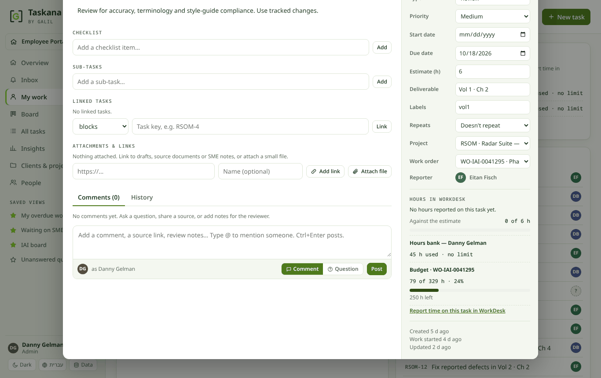
On the task
- Click to edit — any field: title, description, status, type, priority, assignee, dates, estimate, work order, labels, deliverable (e.g. Vol 1 · Ch 3) and repeat.
- Sub-tasks and a checklist break the work down; a sub-task is a task of its own.
- Linked tasks — blocks, is blocked by, relates to. A task blocked by an unfinished task is marked Blocked.
- Attachments & links — drafts, source documents, SME notes. Files up to 1 MB.
- Comments — type
@to mention someone; they get it in their Inbox. A question stays open until someone marks it answered. - History — every change, with who made it and when.
- Copy link — a link that opens this task.
Reporting time on a task
Time is reported in WorkDesk, never in Taskana. On a task assigned to you, Report time on this task in WorkDesk opens WorkDesk's Time Log with the client, project, work order and task already chosen. Once the entry registers, its hours appear under Hours in WorkDesk on the task; hours still in approval are shown beside them.
Boards, lists and saved views
- Drag a card to another column to change its status.
- Filter by client, project, assignee, type, priority, status, Overdue, Open questions or text. Save view keeps the filters as a view of your own; nobody else sees your saved views.
- In All tasks, select several tasks and use Bulk actions to change their status, assignee or priority, move them to another project, or delete them.
From WorkDesk to Taskana
People, clients, projects and work orders are set up in WorkDesk and shown in Taskana. Taskana keeps them up to date by itself; nobody types them twice.
| In WorkDesk | In Taskana |
|---|---|
| People | Taskana's people, with names in English and Hebrew, job title and department. Their Taskana role is their portal access. A person deactivated in WorkDesk cannot be assigned. |
| Clients | Clients & projects, with each client's projects and open tasks. |
| Projects | Taskana's projects — name, client, lead (the WorkDesk owner), status and dates. Each project gets a short key for its task numbers. |
| Work orders | The Work order field on every task, and the project's work-order list with each one's open tasks and budget. |
| Budgets, assignments, hours | The indicators in Budget and hours banks. |
When it updates
Whenever WorkDesk saves a change, Taskana picks it up — straight away in another tab, and when you come back to the Taskana window. Data → Update from WorkDesk now does it on demand.
What stays in Taskana
On a project page, a Manager or Admin can edit the two things that are Taskana's own: the project's key and document type, and its description. Everything else on clients, projects and people shows a note — managed in WorkDesk — with Open WorkDesk for people who can.
Budget and hours banks
Taskana shows WorkDesk's figures next to the work: how much of a project's budget is used, how many hours each person has left on it, and how many hours went into each task.
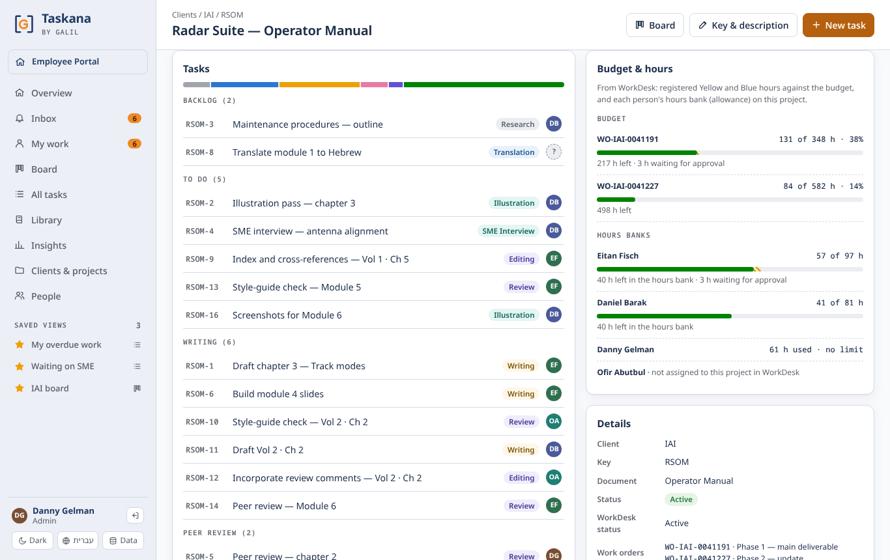
The indicators
- Budget
- The project's — or a work order's — budgeted hours against the registered Yellow and Blue hours in WorkDesk, with hours left (or over budget) and hours waiting for approval. Amber from 90 %, red past 100 %. On a project page, on each work order and on every task.
- Hours bank
- One person's allowance on the project or work order (their WorkDesk assignment) against what they have registered there: hours left, hours past the allowance, or no limit. Not assigned to this project in WorkDesk means their time there will go to approval.
- Hours on the task
- Hours reported in WorkDesk that name the task — all colours — against the task's estimate.
Who sees them
- Everyone sees their own hours bank — on My work under My hours banks, on the project page as Your hours bank, and on their own tasks.
- Managers and Admins also see budgets and every team member's hours bank, as WorkDesk's Project Managers, Operations Managers and the CEO see them.
- The figures are read-only. Budgets, allowances and assignments are changed in WorkDesk — Management → Budgets and Assignments & Allowances; more hours are requested from WorkDesk's My assignments.
Taskana roles, insights and data
Five Taskana roles, set per person in the portal access. Insights measures delivery; Data holds the backup, the CSV export and the demonstration data.
The five roles
| Role | What it carries |
|---|---|
| Admin | Everything, including the data, backup and restore, and anyone's comments. |
| Manager | Every task, project settings (key and document type), deleting any task, budgets and the team's hours banks. |
| Member | Creates and works tasks, comments and asks questions; deletes tasks they reported. |
| External | Only the tasks they are assigned, reported or are mentioned on. No Insights, Clients or People pages. |
| Viewer | Reads everything and comments; changes nothing. |
The defaults by WorkDesk role are in Portal access.
Insights
For a period (30 days to all time), a client and a project: tasks opened against closed per week or month, closing rate, on-time delivery, cycle time, questions answered, where the work is by workflow stage, workload by person and completion per project. Show as a table gives the numbers behind each chart.
Data
- Download backup / Copy backup — every task, comment and view in one JSON file. Export tasks (CSV) for a spreadsheet.
- Restore from a backup… replaces Taskana's data; Undo last restore brings back what was there before.
- Update from WorkDesk now — see From WorkDesk to Taskana.
- Demo data — made-up tasks for the real team on WorkDesk's projects. Demo records are marked, so removing them leaves real work alone.
With GitHub storage every save is a commit, so the branch history is a backup too; with OneDrive a dated copy goes to backups/ once a day.
The Library
The team's research notebook: rich documents for collecting and working through what subject-matter experts tell you — in interviews, on site visits and in product walkthroughs at the client — and for the house notes the team keeps. It lives in Taskana, beside the tasks the research is for.
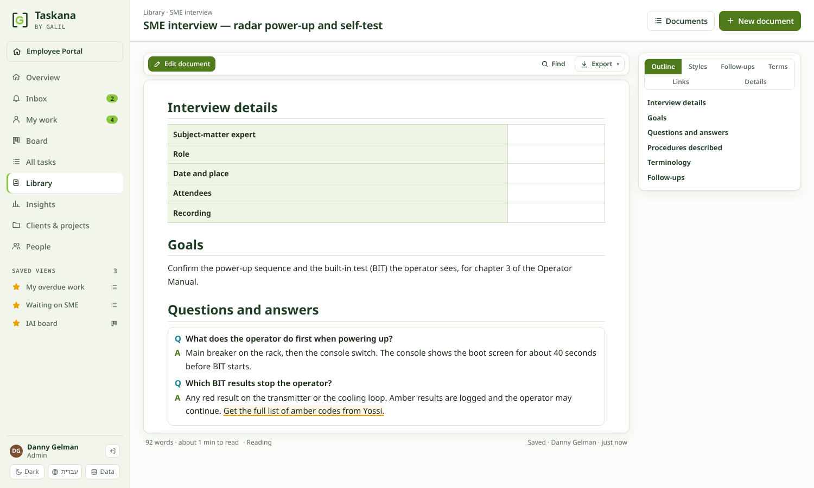
Opening it
In Taskana, choose Library in the sidebar. Everyone who can see every task in Taskana — Admins, Managers, Members and Viewers — can read the Library; Members and above can write in it. Outsourced (External) accounts have no Library. Until October 2026 the Library was a tab in WorkDesk; its items were brought into Taskana as Research notes the first time the Library was opened.
Finding a document
- With no document open, the list of documents fills the left side: each shows its title, kind, status, the number of open follow-ups (a ? badge with the count), its client, project and expert, and who changed it last.
- Search the library looks through titles, experts, places, tags and the full text of every document. The three selectors narrow the list by kind, status and client.
- With a document open, the list folds away so the document has the width. The Documents button at the top brings the list back, and hides it again.
- A private document (Private — only I can see it under Details) appears only in its author's list.
Creating a document
- Click New document and choose what it is for. Each kind starts from a template:
| Kind | The template sets out |
|---|---|
| SME interview | Interview details (expert, role, date and place, attendees, recording), goals, questions and answers, procedures described, terminology, follow-ups. |
| Site visit | Visit details (site, date, host, equipment and versions), what was observed, procedures observed, photos and screens, safety notes, follow-ups. |
| Walkthrough | System and version, steps shown, a table of screens and messages, follow-ups. |
| Research notes | Sources, findings, open questions. |
| Meeting notes | Agenda, decisions, action items. |
| Blank document | An empty page. |
- The new document opens with the Details tab showing: give it a title, then set its client, project, task, expert and date (see Details below).
- Click Edit document and start writing — or paste your raw notes and let Organize structure them (see Library tools).
Reading and editing
A document always opens for reading, so a stray click or key can't change it. Links work, and nothing you type lands in the text.
- Edit document (or Ctrl+E, or a double-click in the text) switches editing on. The page gets a green frame and the toolbar appears.
- Done editing (or Ctrl+E again) switches it off and saves.
- Visual and HTML, beside Done editing, switch between the page and its HTML and CSS — see HTML mode.
- Locked: under Details, the document's author or a manager can tick Locked — no editing until unlocked. Nobody can switch editing on until it is unlocked — use it for a Final document.
There is no Save button: every change is saved a moment after you stop typing, and the footer says Saving… and then Saved, with who saved last and when. Ctrl+S saves at once. The Library is part of Taskana's data, so it is kept, shared and backed up the same way as the tasks. If two people edit the same document at the same moment, the later save wins — agree who is editing.
The side panel
| Tab | What it shows |
|---|---|
| Outline | Every heading, indented by level. Click one to jump to it. |
| Styles | The document's fonts and styles — see Fonts and styles. |
| Follow-ups | Everything marked as a follow-up, with a box to tick when it is resolved, and every unticked checklist item. Create tasks from open follow-ups turns them into Taskana tasks. |
| Terms | Every word marked as a term, with a field for what it means. |
| Links | The links in this document — to other documents, headings, tasks and the web — and Linked from: the documents that link here. |
| Details | Title · Kind · Status (Draft, In review, Final) · Client · Project · Task (with a link to it) · Subject-matter expert and their role · Date · Where · Tags · Private · Locked · who created it and when · Delete document (the author or a manager; the toast offers Undo). |
Exporting and printing
Export (in the reading bar, and under Writer tools while editing) offers:
- Word document (.doc) — opens in Word with the document's look, ready to edit or to paste into a client template.
- Web page (.html) — a single file, with the document's styles and fonts.
- Markdown (.md), or Copy as Markdown to paste it into another tool.
- Print or save as PDF (Ctrl+P) — page breaks you inserted start a new page.
Every export starts with the title and a line with the client, project, expert and date.
Writing in the Library
The editor works like a word processor: a toolbar of buttons and menus over the page, keyboard shortcuts, and undo for every change. This chapter goes through it from left to right.
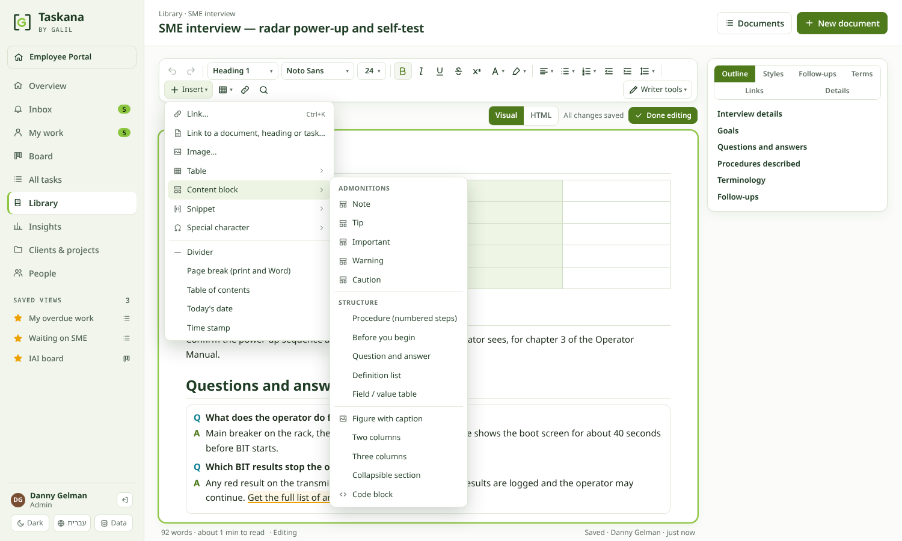
The toolbar
| Control | What it does |
|---|---|
| Undo · Redo | Steps back and forward through every change — typing (a word at a time), buttons and tools alike. Ctrl+Z · Ctrl+Y. |
| Style | Shows the style the caret is in and applies another: Normal text, Heading 1–4, Lead paragraph, Small print, Caption, Quote, Code block, and the document's own styles. |
| Font · Size | The typeface and size of the selected words. The list shows each font in its own face. |
| B · I · U · S | Bold, italic, underline, strikethrough. |
| More formatting | Superscript, subscript, inline code (Ctrl+`), keyboard key, text size, clear formatting. |
| Text colour · Highlight | A palette for each; Automatic and No highlight remove them. |
| Alignment | Start, centre, end, justify — for every paragraph in the selection. |
| Bullets · Numbering | List styles — see Lists. |
| Decrease · Increase indent | Nests a list item, or indents a paragraph by a step. |
| Spacing and indents | Line spacing (1.0, 1.15, 1.5, 2.0), space after paragraphs (none, normal, large), first-line and hanging indents. |
| Insert | Links, images, tables, content blocks, snippets, special characters, a divider, a page break, a table of contents, today's date, a time stamp. |
| Table | Everything about the table the caret is in — see Tables. |
| Link · Find | A web link (Ctrl+K); find and replace (Ctrl+F). |
| Writer tools | Structure, follow-ups, terms, code and clean-up — see Library tools. |
Formatting text
Select the words first, then use the toolbar. Formatting wraps exactly the selected words — across several lines or paragraphs too — without adding line breaks or spaces. Clicking a button again on formatted text takes the formatting off. More formatting → Clear formatting removes bold, italics, colours, highlights, fonts and sizes from the selection.
Paragraphs
- Styles give a paragraph its role — a heading, a quote, small print. Use them rather than making text bold and large by hand: headings feed the outline, the table of contents and heading numbers, and a style can be changed for the whole document at once (see Fonts and styles).
- Alignment, Spacing and indents and the indent buttons apply to every paragraph the selection touches.
- Each paragraph runs in the direction of its own text, so English notes in a Hebrew document (and the reverse) read correctly.
Lists
- Bullets: dots, circles, squares, dashes, arrows, or a checklist — click a checklist box to tick it.
- Numbering: 1. 2. 3. · a. b. c. · A. B. C. · i. ii. iii. · I. II. III. — and two multilevel styles for the whole list: Multilevel 1 · 1.1 · 1.1.1 and Outline 1 · a · i.
- Tab on a list item nests it one level deeper; Shift+Tab brings it back.
- Numbering → Start at… starts a numbered list from any number — useful when a procedure continues after a note.
- Remove the list turns the items back into paragraphs.
Tables
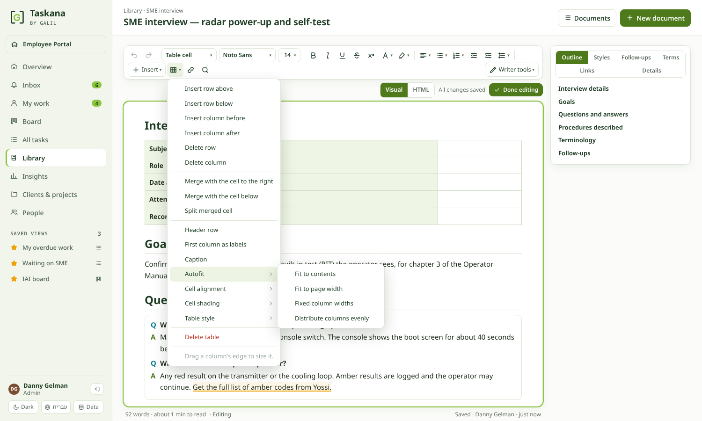
- Insert → Table and move over the grid to choose the size (up to 8 × 8), or Custom size… for up to 60 rows and 15 columns. The first row is a header row.
- Type in a cell. Tab moves to the next cell (and adds a row at the end), Shift+Tab to the previous one.
- Use the Table menu to change it:
| Command | What it does |
|---|---|
| Insert row above / below, column before / after | Adds a row or column next to the caret. |
| Delete row / column / table | Removes it; deleting the last row or column removes the table. |
| Merge with the cell to the right / below | Joins two cells, keeping both contents. |
| Split merged cell | Splits a merged cell back into single cells. |
| Header row · First column as labels · Caption | Turn the first row into headings, the first column into bold labels, and add a caption above the table. |
| Autofit | Fit to contents (columns as wide as their text), Fit to page width, Fixed column widths (the widths stop changing as you type), Distribute columns evenly. |
| Cell alignment · Cell shading | Top, middle or bottom; start, centre or end; a background colour — for the selected cells. |
| Table style | Grid, striped rows, plain lines, compact, dark header. |
To size a column, point at the right edge of one of its cells (the left edge in Hebrew) until the pointer becomes ↔, and drag. The table keeps the widths you set.
Images
- Insert → Image…, or paste a screenshot (Ctrl+V), or drag an image file onto the page. Images up to 1 MB.
- Click an image to select it. The bar above the page sets its width (25 %, 50 %, 75 %, 100 %, original), wraps the text to the left or right, centres it or puts it back in line, sets its alternative text, adds a caption under it, or deletes it.
Links
- Link (Ctrl+K) — type a web address and Apply. With the caret in a link, the same bar changes or removes it.
- Insert → Link to a document, heading or task… opens a picker with three tabs: Documents (search finds headings inside them too), This document (its headings) and Tasks (Taskana tasks by key or title). With words selected, they become the link; otherwise the title is inserted.
- While reading, a click on a link follows it: another document opens (at the heading, if the link points to one), a task opens over the page, and a web address opens in a new tab. While editing, Ctrl+click follows it.
- The Links tab lists every link in the document and every document that links to it.
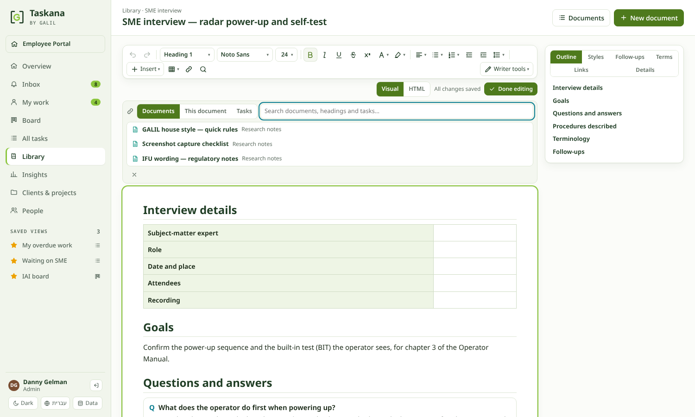
Content blocks
Insert → Content block adds a ready-made block, already formatted:
- Admonitions — Note, Tip, Important, Warning (damage to equipment or data), Caution (risk of injury).
- Structure — Procedure (a titled set of numbered steps with a result line), Before you begin (prerequisites as a checklist), Question and answer, Definition list, Field / value table.
- Layout — Figure with caption, Two or Three columns, a Collapsible section (click its title to fold it), Code block.
Snippets
A snippet is a piece of a document saved under a name, for the whole team to reuse — a standard safety note, a disclaimer, a table layout.
- Select what to keep and choose Insert → Snippet → Save the selection as a snippet…. Name it and press Enter.
- To use it, put the caret where it belongs and choose it under Insert → Snippet.
- Manage snippets… renames, inserts and deletes them (your own, or any as a manager).
Also under Insert
Special character (arrows, ±, ×, ≤, ≥, °, µ, Ω, ©, ™, €, ₪, ✓, ⚠ and more) · Divider · Page break (a new page in print, PDF and Word) · Table of contents · Today's date · Time stamp — the current time in brackets, handy for marking where you are in a recorded interview.
Find and replace
Ctrl+F opens the bar above the page. It counts the matches as you type; Enter or ↓ goes to the next one, ↑ to the previous one; Aa matches capitals exactly. While editing, Replace changes the current match and Replace all every one — undo brings them all back in one step.
Typing shortcuts
At the start of an empty paragraph, type one of these and a space:
| Type | You get |
|---|---|
# · ## · ### · #### | Heading 1 · 2 · 3 · 4 |
- or * | A bulleted list |
1. · a. | A numbered list · a lettered list |
[] | A checklist |
> | A quote |
``` | A code block (Enter twice at its end leaves it) |
--- | A divider |
Keyboard shortcuts
| Keys | Action |
|---|---|
| Ctrl+E | Start or stop editing |
| Ctrl+Z · Ctrl+Y (or Ctrl+Shift+Z) | Undo · Redo |
| Ctrl+B · I · U | Bold · Italic · Underline |
| Ctrl+` | Inline code |
| Ctrl+Alt+1…4 · Ctrl+Alt+0 | Heading 1–4 · Normal text |
| Ctrl+Shift+7 · 8 | Numbered list · Bulleted list |
| Tab · Shift+Tab | Nest or un-nest a list item; next or previous table cell; indent a paragraph; two spaces in a code block |
| Ctrl+K | Link |
| Ctrl+F | Find and replace |
| Ctrl+S · Ctrl+P | Save now · Print or save as PDF |
| Esc | Close a menu or the bar above the page |
Text pasted from Word, Outlook or a web page keeps its headings, lists, tables, bold and links, and loses the rest (Word's hidden styling, fonts and colours from the source). Plain text arrives as one paragraph per line. Inside a code block, everything is pasted as plain text.
Library tools: structure, styles and HTML
The tools that turn raw notes into a document: organising a dump, a table of contents, follow-ups and terms, tidy code — and the document's fonts, styles, CSS and HTML.
Organize pasted notes
Type or paste your notes as they come — one thought per line — then choose Writer tools → Organize pasted notes into a document. With part of the document selected, only that part is organised; otherwise every plain paragraph is. Headings, lists and tables you already made are left alone.
| A line that… | becomes |
|---|---|
is in CAPITALS, or starts with # | A heading |
| is short and ends with a colon, e.g. Error codes: | A Heading 2 |
starts with 1.2 or 1.2.3 | A Heading 2 or 3 (numbered headings) |
starts with 1. or a) | A numbered step |
starts with -, * or • | A bullet |
starts with [ ] or [x] | A checklist item |
starts with Q: / A: (or ש: / ת:) | A question-and-answer block |
starts with Note:, Tip:, Warning: or Caution: | A callout of that kind |
starts with todo, TBD, follow-up or ?? | A follow-up |
| looks like code (JSON, XML, SQL, a shell command, indented lines, braces and semicolons) | A code block, tidied and labelled |
With two or more headings, a table of contents is added at the top. One Undo puts the notes back exactly as they were.
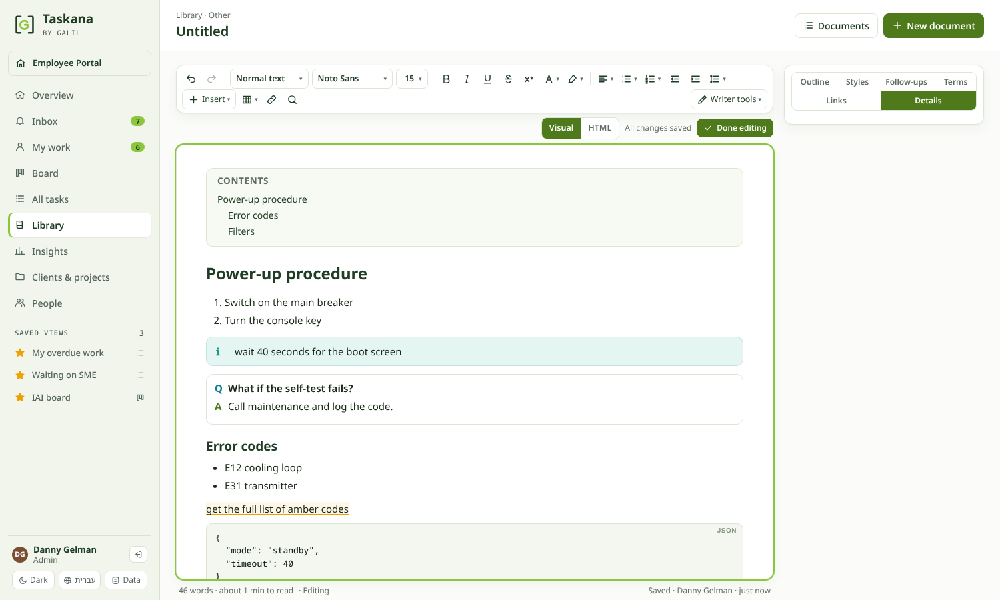
Structure
- Insert / update table of contents — a contents box at the top, linking to every heading; run it again after changing headings.
- Number the headings (1, 1.1, 1.2…) — numbers every Heading 1–3 automatically; choose it again to stop.
- Tidy code blocks — re-indents JSON, XML and HTML, breaks SQL at its clauses, cleans shell commands and indents brace-based code; each block is labelled with its language. Turn selection into a code block does the same for selected text.
- Clean up formatting (whole document) — removes empty paragraphs and leftover formatting from pasted text.
Follow-ups and terms
- Select what still needs an answer and choose Writer tools → Mark selection as a follow-up. It is highlighted, and listed under Follow-ups in the side panel together with any unticked checklist items.
- Tick it there when it is resolved. Create tasks from open follow-ups makes a Taskana task of each open one, on the document's project (set it under Details first), assigned to you.
- Select a word the client uses and choose Mark selection as a term. Under Terms, write what it means. Insert glossary from terms adds (or refreshes) a Glossary table at the end of the document.
Fonts and styles
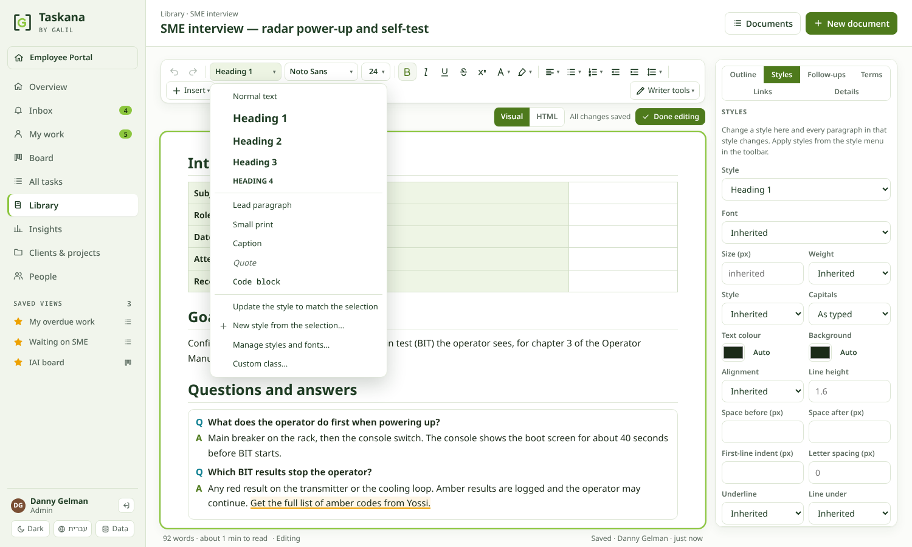
Fonts. Under Styles → Fonts:
- Document font sets the typeface of the whole document.
- Add a Google font by name (suggestions include Heebo, Rubik, Assistant, Frank Ruhl Libre, Inter, Roboto and more) and press Add, or Upload a font file (.woff2, .woff, .ttf or .otf, up to 700 KB).
- The fonts you add appear at the top of the toolbar's Font menu, followed by the fonts installed on most computers.
Changing a style. Pick it in Style — Normal text, Heading 1–4, Lead paragraph, Small print, Caption, Quote, Code block, Table heading, Table of contents, or one of the document's own — and set any of: font, size, weight, italic, capitals, text colour, background, alignment, line height, space before and after, first-line indent, letter spacing, underline, a line under the paragraph. Every paragraph in that style changes at once. Reset to default undoes your changes to the style.
Update a style to match the selection — the word-processor way: format one paragraph by hand until it looks right, put the caret in it, and choose Update the style to match the selection in the style menu (or Match the selection in the Styles tab). The style takes that look, and the manual formatting is folded into it.
A new style. Choose New style from the selection… in the style menu (or ＋ New style… in the Styles tab), name it, choose Paragraph style or Character style (for words) and what it is based on, and Create style. It starts from how the selected text looks. Paragraph styles appear under This document's styles in the style menu, character styles under Character styles.
Copy the styles and fonts of another document (at the bottom of the Styles tab) brings in that document's styles, fonts and CSS — the text is untouched. Use one well-styled document as the model for the rest.
Custom class (in the style menu) gives the paragraph at the caret one or more CSS classes. The classes the document's CSS defines are offered as one-click choices. A class changes nothing until CSS styles it.
HTML mode
- While editing, choose HTML beside Done editing (or Writer tools → Edit the document's CSS…).
- On the HTML tab, change the HTML, or paste a whole page's HTML. Paste HTML replaces the document with the HTML on the clipboard; Format HTML lays the code out neatly. The preview on the right follows as you type.
- On the CSS tab, write CSS for this document, and give the address of a linked stylesheet — a .css file at an
https://address, for example the client's documentation stylesheet. The linked file is applied first, then the document's styles, then its own CSS. - Choose Visual to go back to the page.
Headings, paragraphs, lists, tables, images, links, sections, figures, collapsible sections, classes, ids and inline styles are kept. Scripts, event handlers, forms, frames and embedded media are always removed. The document's CSS and fonts apply only inside that document — never to Taskana or to other documents.
A worked example: from an SME interview to a structured document
- New document → SME interview. Under Details, set the client, project, the task the research is for, the expert and the date.
- Edit document. Fill in the interview details table and the goals before the meeting.
- During the interview, type freely under Questions and answers:
Q:andA:lines, numbered steps,todo:for anything to check. Insert → Time stamp marks where you are in the recording. - Afterwards, select the notes and run Organize. Fix the headings, and mark the client's words as terms.
- In Follow-ups, choose Create tasks from open follow-ups, so each open question becomes a task on the project.
- Link the document from related ones (Insert → Link to a document), set the status to In review for the team lead, and to Final — and Locked — once agreed.
- Export → Word when the content goes into the client's manual.
Reference
The fixed vocabularies, defaults and limits, in one place.
Statuses
| Set | Values |
|---|---|
| Entry status | Registered · Pending · Cancelled · Locked |
| Project status | Active · WIP · Draft A · Draft B · Pending Information · Pending Review · On hold · Done |
| Taskana task status | Backlog · To Do · Writing · Peer Review · SME Review · Done |
| Taskana priority | Critical · High · Medium · Low |
| Taskana role | Admin · Manager · Member · External · Viewer |
| Work-order status | Active · On hold · Closed |
| Reimbursement | Submitted · Approved · Paid · Rejected |
| Request types | Time entry · Leave request · Team loan · Team transfer · Allowance increase · New list item · Expense · Account activation · Role change · Retroactive edit |
| Pricing bases | Money · Hours · Pages · Words · Custom |
| Library document kind | SME interview · Site visit · Walkthrough · Research notes · Meeting notes · Other |
| Library document status | Draft · In review · Final |
Defaults and limits
| Setting | Default | Where it is changed |
|---|---|---|
| Daily soft limit | 9 h | Company settings |
| Daily hard limit | 12 h | Company settings |
| Weekly hours | 42 h | Company settings, or per person |
| Hour rounding | 0.5 h | Fixed |
| Session lifetime | 12 h | Fixed — inactivity |
| Failed sign-ins before lockout | 5 | Fixed — locked for 15 minutes |
| Password reset link validity | 30 min | Fixed |
| Minimum password length | 12 | Fixed — plus upper, lower and a digit |
| Burn-rate window | 30 days | Fixed |
| Audit rows shown | 400 | Fixed — 4,000 retained |
| Attachment on a Taskana task | 1 MB | Fixed |
| Image in a Library document | 1 MB | Fixed — the same limit as a task attachment |
| Font file uploaded to a Library document | 700 KB | Fixed — .woff2, .woff, .ttf or .otf |
| Library autosave | 0.7 s | Fixed — after the last change |
Reserved for a later version
- Annual Sick and Vacation balances — leave is approved by your manager today; no annual balance is checked yet.
Demonstration accounts
Without Microsoft Entra ID, the demonstration data signs in as the GALIL team, all with the password GalilWorkdesk1. Sign in to the portal as each to see what that role sees in WorkDesk and Taskana.
| Role | Name | Taskana role | |
|---|---|---|---|
CEO | Tamir Nisman | tamir@galiltc.co.il | Admin |
OPS | Inon Kanner | inon.kanner@galiltc.co.il | Admin |
PM | Danny Gelman | danny.gelman@galiltc.co.il | Admin (changed in portal access) |
PM | Kfir Hodara | kfir@galiltc.co.il | Manager |
EMP | Eitan Fisch | eitan.f@galiltc.co.il | Member |
EXT | Gil Hadar | gil.hadar@galiltc.co.il | External |
To try the other roles, change someone's role in Management → People.